Biography archive website
qumcl story (2003-2026)
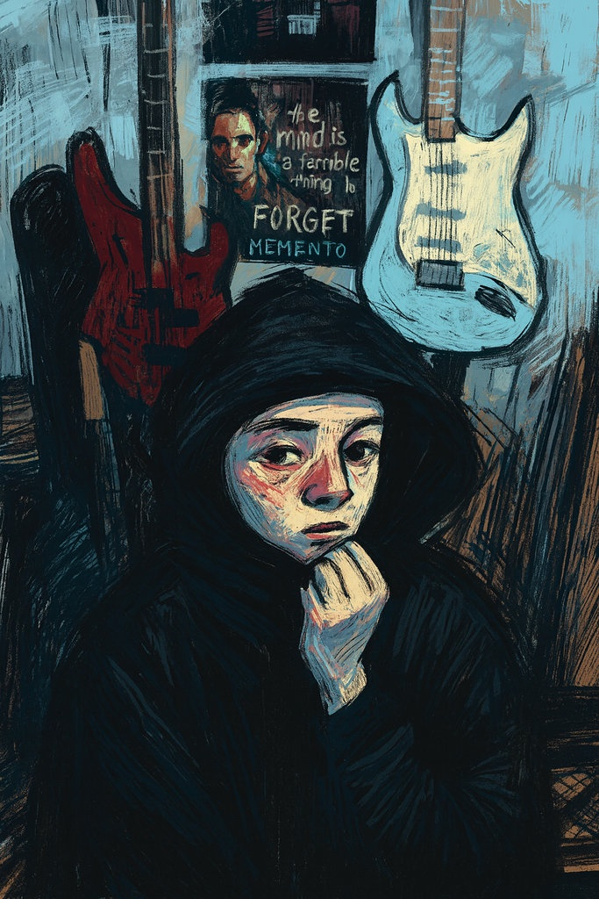
qumcl (stylized as クムクル) is the primary project of Belarusian electronic musician and producer Egor Gerasenko (also known as Yahor Hierasienka-Dziejkun; born 4 March 2003). Emerging from the Siberian underground music scene in the early 2020s, his work combines IDM, ambient, jungle, breakcore, glitch, lo-fi, braindance and weirdcore aesthetics.
Beginning with experimental self-released recordings under the alias Madcap Laughs in 2022, Gerasenko gradually developed a large body of independent releases distributed primarily through Bandcamp and netlabels. His music frequently explores themes of isolation, internet culture, psychosis, urban alienation, and digital decay.
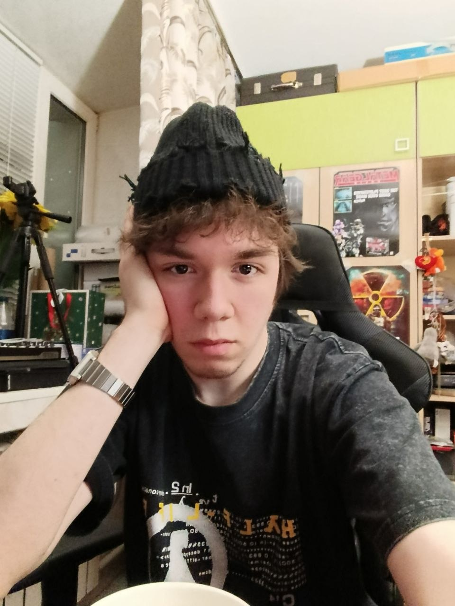
In 2024 he co-founded the netlabel Xeuqra alongside British producer Xiroach and later launched the independent imprint q-rec. By 2026, his discography had expanded to hundreds of recordings across multiple aliases including qu12, Qulicker, and Fractured Voices.
Early Life
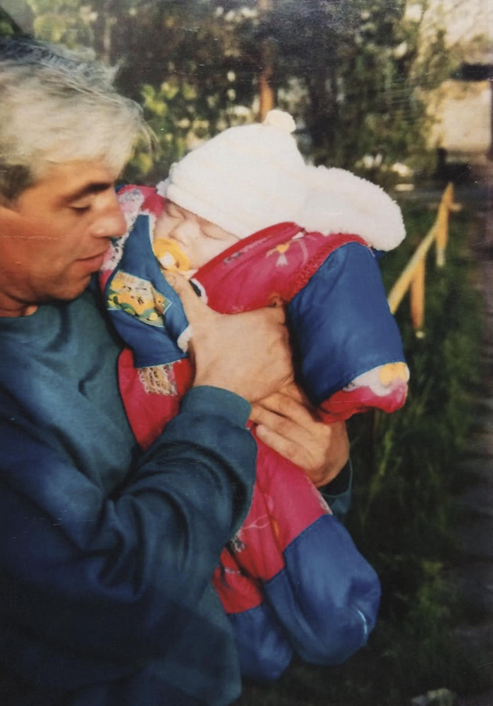
Egor Gerasenko was born on March 4, 2003, in Pyt-Yakh, Russia, to Belarusian parents. He grew up in Surgut, an industrial city in Siberia. During his early years, he lived with his parents in a dormitory before moving to the Zheleznodorozhny (Railway) District of Surgut in the early-to-mid 2000s. His parents had emigrated from Gomel, Belarus, to Siberia for work in the late 1990s and early 2000s; his mother arrived in 1993, his father in 2000. Gerasenko was named after a character from the Soviet film Officers (1971).
He attended School No. 42 in Surgut from 2010 to 2014, followed by Secondary School No. 20. As a child, he studied bayan (a type of accordion) at a music school, along with solfège, balalaika, and singing. While he later stated that this formal training gave him an early connection to music, he believes it provided him with little practical knowledge for his future work.
Gerasenko became interested in both electronic and rock music from the late 2000s, noting that the two genres coexisted in his listening habits. He has cited Pink Floyd, The Prodigy, The Chemical Brothers, deadmau5, Skrillex, and many other 1990s, 2000s, and 2010s artists as part of his formative years. He also discovered Aphex Twin in the *mid-to-late 2010s*. His interest in computers began at age five (2007--2008), when his family purchased their first computer, sparking a deep fascination with software, video games, and technology.
At 16, he bought his first guitar; at 17, he bought a Yamaha synthesizer, reflecting his parallel interest in rock and electronic music. He began consciously making music at 16, also collecting vinyl and cassettes as a form of self-expression in what he described as an "industrial boring environment". According to Gerasenko, the musical scene in Surgut was very limited, consisting mainly of local rock groups. Apart from hip-hop rap and beatmaking, electronic music was practiced by almost no one. He has stated that the genres he works in are "not written by anyone" in his city and are "mostly for large cities like Moscow or St. Petersburg". After attending an underground concert performance once at a young age, he never visited such venues again.
The turning point came at 17, when he heard Aphex Twin's album *Selected Ambient Works 85--92*. He has described it as a complete transformation of his vision of electronic music, including lo-fi. Immersed in internet culture and its environment since the late 2000s, he felt encouraged to use the internet as his primary home base, releasing music freely. He also began immersing himself in rave music across many different genres, from acid to hardcore.
"There is no need to look for a label to release music in our time," he has said,
"when it is almost impossible given the huge audience of musicians who are looking for a path to fame in any way. I chose a niche home environment. I don't need to assert myself in front of people with my music."
From 2021 to 2023, Gerasenko studied at the Surgut Institute of Economics, Management and Law, graduating with a diploma as a Technological Equipment Technician. He also has incomplete education as a Graphic Designer, a skill reflected in the self-made artwork for his album covers.
2012--2020: Early creative era
Gerasenko's earliest foray into content creation began in 2012, when he started recording videos of video games, primarily Minecraft and Half-Life, alongside other childish activities. From 2015 onward, he became interested in video editing using Sony Vegas 10 and graphic design in Adobe Photoshop, creating thumbnails, banners, and artwork for his YouTube channel. During this period, he was already deeply immersed in internet culture, including MLG memes and other viral trends of the 2015--2017 era.
Initially, Gerasenko did not plan to become a musician in the traditional sense. He recalled:
"One time when I was in Belarus, my aunt asked me what I wanted to be. I told her I wanted to be a DJ. But that was 2009, and I was very young. Rather, in a general sense, I meant that I wanted to be involved with music."
He has also noted that he was drawn to Western culture from early childhood, including the old YouTube era of the late 2000s, meme culture, internet culture, and video games.
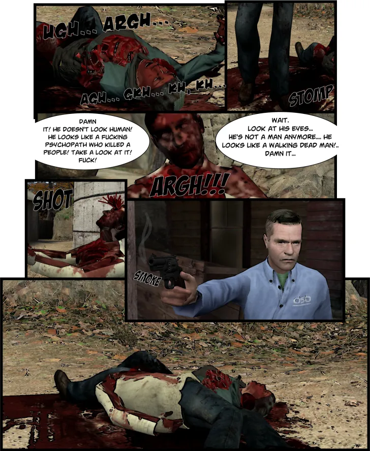
"I remember watching Gmod machinima during that period. I am a very big fan of Valve games — Half-Life, Counter-Strike, and the Gmod mod are my very first games, and they remain the most important games for me to this day."
In addition to his creative pursuits, he also experimented with hosting servers for Garry's Mod and Minecraft.
2021--2022: Madcap Laughs and early works
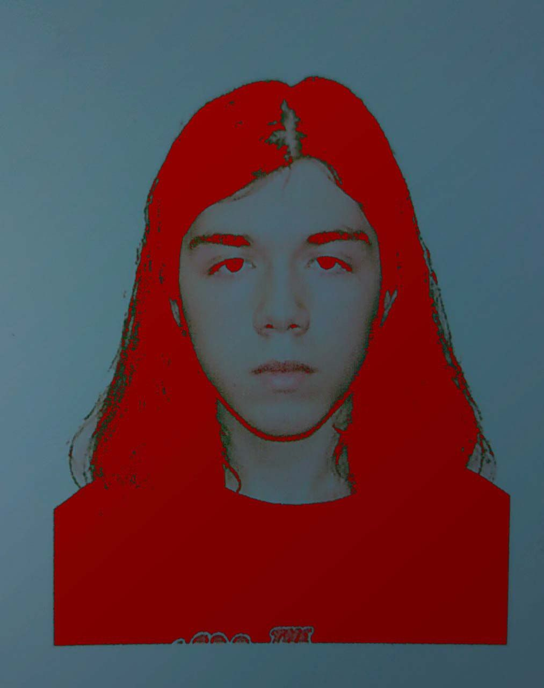
In the late 2010s, Gerasenko became increasingly interested in electronic and rock music. By the early 2020s, he had begun home recording, first with guitar. After acquiring his first guitars, he started creating numerous raw, low-quality guitar cover recordings and original riff sketches, though he later described this period as unremarkable.
During this time, he was finishing secondary school.
He recalled: "I studied terribly. I showed no interest in studying except for the fact that I had to mark my attendance and pretend to study for the teachers. But in high school, teachers increasingly turned a blind eye to what older students were doing because we were considered older and therefore more 'formulated.' But in reality, we were still the same children, just older."
He added: "Regarding myself, I completely immersed myself in music from the 10th grade. By the 11th grade, I was already skipping school and spending my time either doing nothing or working on music."
After graduating in 2021 and beginning college, Gerasenko made his first electronic recordings.
He stated: "I was just learning Ableton. At first, I only studied FL Studio, but for me it was a terrible program. I switched completely to Ableton and use only it to this day, developing my skill further and further. For me, Ableton is the ideal environment for creativity."
From *autumn 2021 to spring 2022 *, Gerasenko's mental health began to deteriorate significantly. Early symptoms had appeared in school, but he had ignored them. During his college period, the condition worsened.
"I avoided people a lot, wandered around the city, thought a lot about death, and had unbearable mental pain that I could not quell."
In early 2022, he recorded his first remixes of songs he was listening to or had on his computer, including Dyalla — Randy Butternubs (madcaplaughs remix) (2022) and Susumu Hirasawa — Forces (madcaplaughs remix) (2022). Other remixes were either hidden or remain in his unreleased archive. His YouTube channel from this period contained many covers and remixes, though most were low in sound quality.
By *late spring 2022 *, Gerasenko experienced an acute psychotic episode. He noted that he committed his first acts of self-harm at that time, which would later profoundly affect him. During this period of psychosis, he became intensely fascinated with the subject of drugs and nearly tried LSD and heroin, though he never followed through on these intentions.
In early November 2022, he recorded his first full album using his first and only synthesizer, a guitar, and a few VST plugins. He completed Industrial Fallout (2022) in a single day. By the time of the remix releases, he had chosen his first pseudonym, Madcap Laughs.
He explained: "I listened to Syd Barrett a lot during the period of acute psychosis and mental health deterioration. Now it would be a little difficult for me to listen to his music because it is associated with the most acute exacerbation of my life."
He uploaded Industrial Fallout to Bandcamp, a site he had created in summer 2022. The album is characterized by its unconventional dark ambient sound, inspired by the soundtrack of the 1997 game Fallout.
"I really liked that soundtrack. I listened to it over and over again, and I really wanted to make something similar. But due to my limited knowledge of Ableton, I made something more original but also interesting. I sometimes revisit this album when going through my entire discography. I even showed this album in a chat where I was at the time, and some guy paid me 300 rubles for it."
The Bandcamp page describes the release as:
"My first album with a strange and unusual sound. It resembles the atmosphere of darkness, fear and fallout with the theme of drugs and depression. Psychedelic-Experimental Ambient Album."
Sound of Industrial Fallout
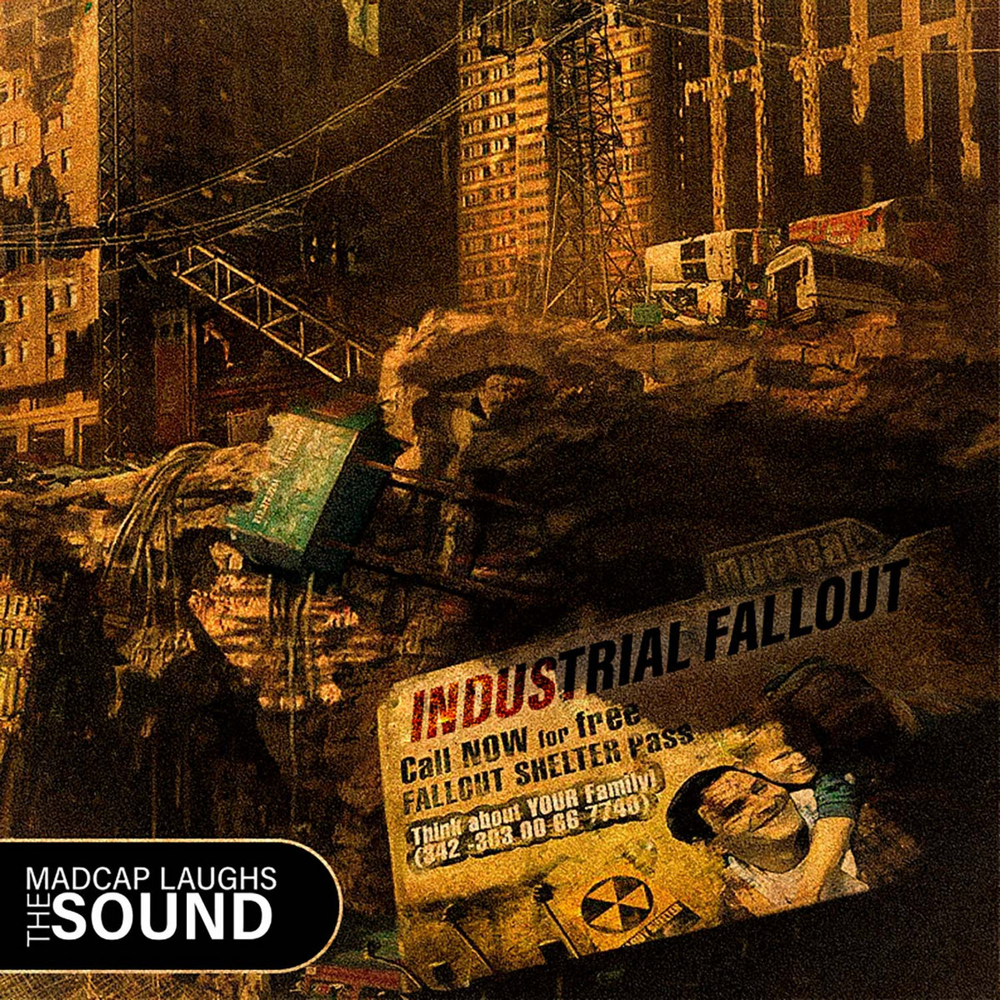
The sound of Industrial Fallout can be characterized as a viscous, post-apocalyptic psychedelic ambient with a deep immersion into the aesthetic of abandonment. Three key aspects define its audio landscape:
*Industrial atmosphere of decay. * True to its title, the music sounds like a soundtrack for wandering through empty factory halls, deserted railways, or endless Backrooms-style corridors. It is a dense, dark, and enveloping sound.
*Sluggish psychedelic experiment. * The compositions are long (averaging 8 to 11 minutes), allowing them to develop slowly and create a hypnotic, almost trance-like effect. Tracks such as "The Arrival Of Bad Trip" and "The Synthesize Experience" explore themes of altered consciousness and depressive trips through sonic distortion.
*Raw lo-fi and analog noise. * The sound consciously lacks the "polish" of commercial electronics. Elements of IDM, tape hiss, and lo-fi textures make the music tangible, "dirty", and alive. The artist has noted that this was his first experience with such a strange, unusual sound, inspired by an atmosphere of fear, darkness and loneliness.
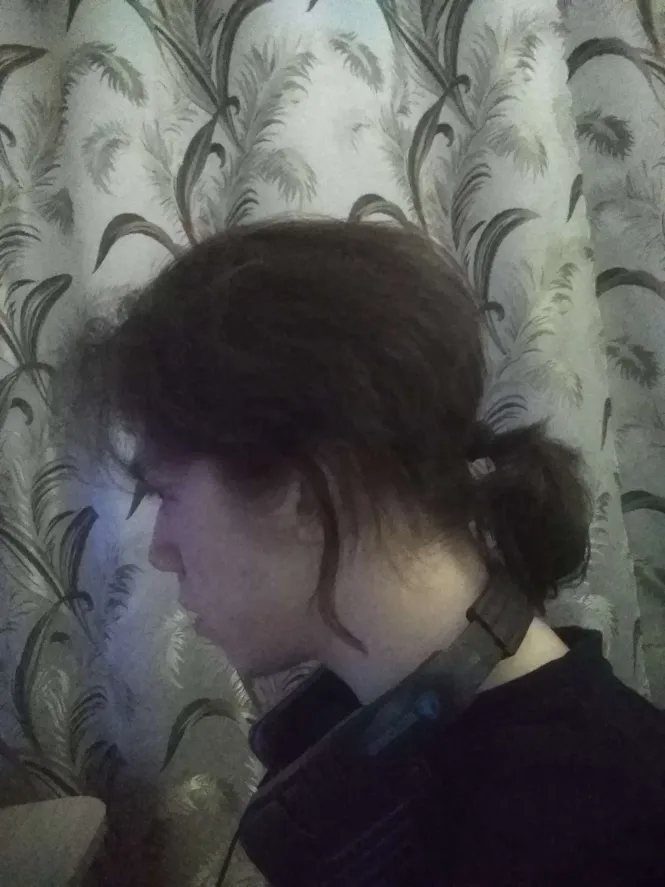
Alongside music, Gerasenko continued to record various videos, ranging from memes to anime music videos (AMVs), and began making edit videos that were popular at the time.
Early 2023: Manifestation of illness in music, first major album
From January 2023, Gerasenko began psychiatric treatment. From January to March, he was diagnosed with schizoid personality disorder, a treatment he later noted did not help him.
"They experimented on me, selecting a bunch of different pills, such as neuroleptics, antidepressants, antiepileptics, some sedatives, and so on. I was also on IV drips, and they injected me with various things they called 'vitamins for the body.' I did not resist, but there came a point when I realized that they did not believe I was ill at all. There was an episode where I shaved my head bald because a foreign thought, a voice in my head, ordered me to do it. The psychologist acted as if trying to catch me out."
Undergoing active treatment that proved ineffective, Gerasenko was forcibly hospitalized in spring 2023 for three weeks, where he was diagnosed with schizotypal personality disorder. Following his hospitalization and the end of his academic term, he recorded a remix of Phonic Boy On Dope (Aphex Twin) — Parking Lot (madcaplaughs remix) (2023). The track is characterized by glitch with the addition of a new beat motif. This release represents a deep underground IDM experiment, raw, with the glitched aesthetics of internet sound art. The early schizophrenic vibe openly hints at a disorienting, psychedelic atmosphere, with the sound intentionally unstable and "broken".
The next release was My Schizophrenia Is Worse (2023). Originally titled LAUGHSMADCAP and consisting of 10 to 13 tracks, it was later renamed and expanded to 21 tracks. It is essentially Gerasenko's first electronic album with an experimental IDM and ambient sound, with material assembled from winter to spring 2023.
Sound of My Schizophrenia Is Worse
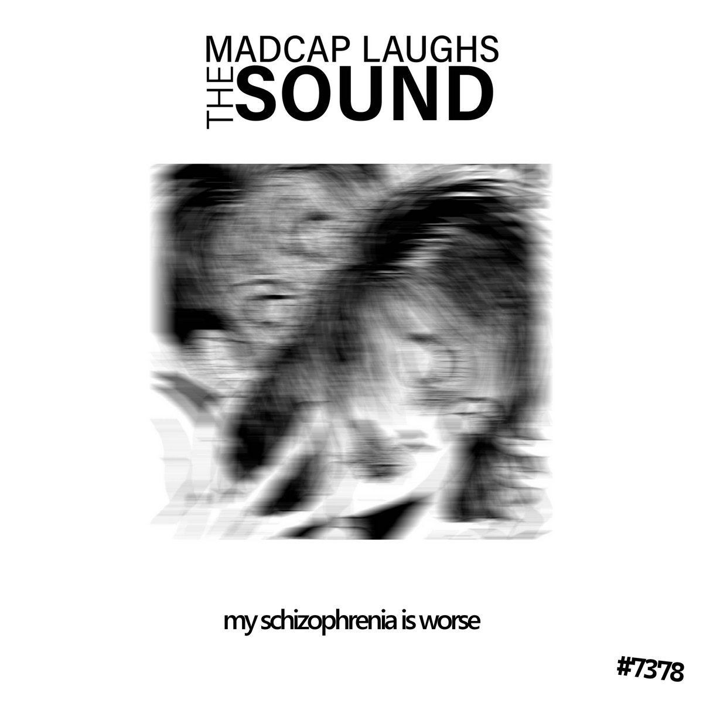
The sound of My Schizophrenia Is Worse (released in May 2023) differs markedly from the monotonous drone of Industrial Fallout. This release is a much more dynamic, nervous, and anxious sound collage that literally simulates the state of an overloaded, disoriented human mind. Its sound design can be broken down into several key elements:
*Classic IDM structure in the vein of Aphex Twin. * The influence of Richard D. James is evident (the album even contains a track directly titled "Aphex Twin"). The sound is built on complex, broken electronic rhythms, analogue synthesizer modulations, and shifting tempo.
Paranoia and emotional swings. * The music constantly throws the listener from one extreme to another. Calm, almost ambient passages ("Expectation"*) sharply give way to aggressive rhythmic tension in tracks like "Tension", "Mechanical Danger", and "Pain", creating a powerful sense of suspense.
*Weirdcore and lo-fi textures. * The album's title is metaphorically reflected in the sound through an abundance of glitches, noise that "breaks" the composition, and distortion effects. The sound is dirty, raw, with a sense of chaos and intrusive audio hallucinations.
*Cinematic suspense (Clint Eastwood and The Godfather Part 3). * Gerasenko incorporates samples from Clint Eastwood's films (*Dirty Harry*, 1971; The Good, the Bad and the Ugly, 1966). The tough, iconic lines, torn from the context of American westerns and noir thrillers, create an atmosphere of paranoia and criminal suspense. Quote from The Godfather Part 3 (1990) add tragedy, monumentality, and a sense of inevitable finality, underscoring the author's internal drama.
*Gaming nostalgia and horror (Half-Life). * The hum of the Black Mesa research complex and the mechanical sounds of the Half-Life system blend perfectly with the industrial rhythms, transforming the tracks into a form of computer horror where the listener is locked inside a virtual nightmare.
*Musical deconstruction (deadmau5). * Sampling the progressive house and electro producer deadmau5 is a bold move. Gerasenko takes clean, well-crafted commercial synths and breaks them down, passing them through lo-fi filters, glitches, and fragmented breakbeats. It sounds like the degradation of familiar dance music, transforming it into weirdcore.
Why this matters for the album's concept.
This method of sampling (in the vein of early Burial or The Future Sound of London) creates an effect of "cultural overload" . A person in a state of psychosis or exacerbated schizophrenia often suffers from their memory chaotically reproducing fragments of films, games, and music they have experienced. While Industrial Fallout sounded like an exploration of abandoned external spaces, My Schizophrenia Is Worse is an exploration of the abandoned internal spaces of the human psyche. It is a deep, complex, and uncomfortable IDM record.
During this period, Gerasenko also tried his hand at DJing, as evidenced by recordings on his YouTube channel. Releasing his first major album online did not make him an instant success, but it marked the beginning of his mature early musical career and the formulation of his sound.
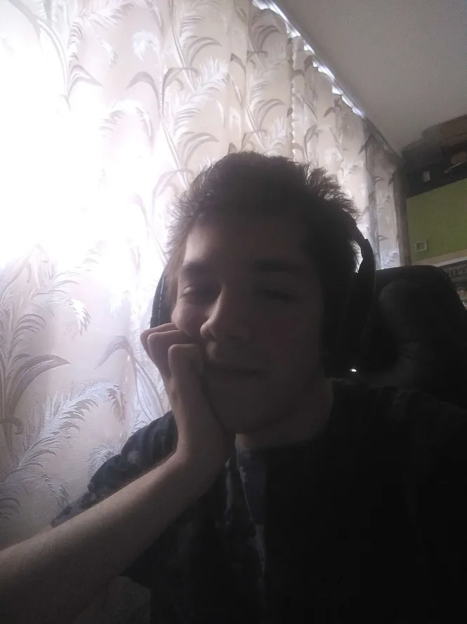
Elechtros EP (May 2023)
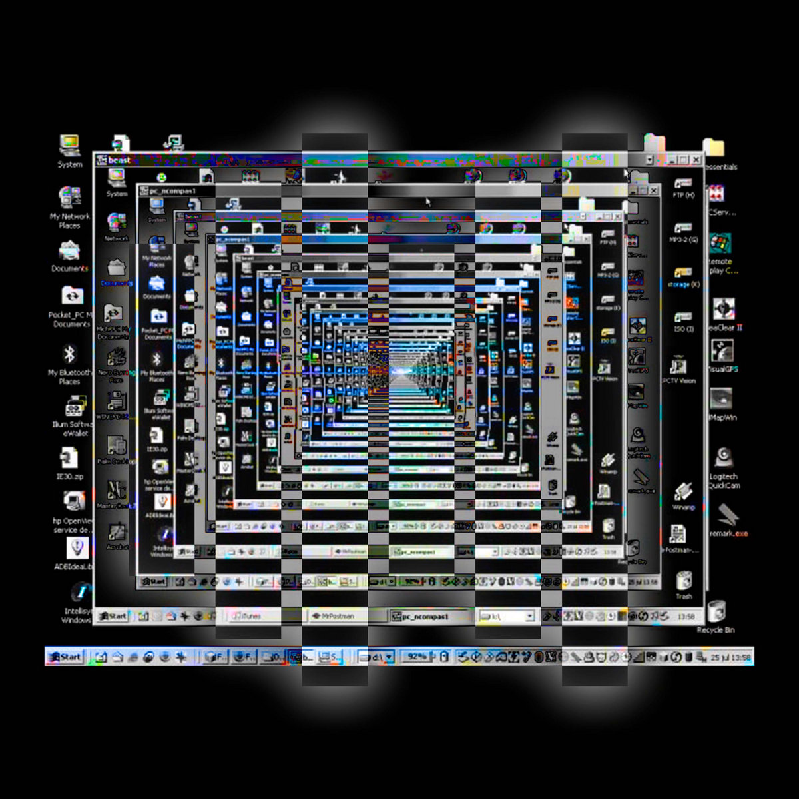
The sound of the next mini-album, Elechtros (released in late May 2023, just ten days after My Schizophrenia Is Worse), is a logical and even more concentrated continuation of Gerasenko's psychedelic experiments. While the previous release was a chaotic collage, this EP sounds like a cohesive, hypnotic session of classic IDM deconstruction.
The musical canvas rests on three pillars:
*Mathematical precision and glitch. * The title Elechtros and tracks like "Mikros" refer to microsound and detailed work with digital errors. The rhythms are broken, dry, and grating but arranged into clear, hypnotic patterns that compel the listener to pay attention to every click, while remaining very sharp and overly lo-fi without sound processing.
*Psychedelic, synesthetic trip. * The track "Skhizo" (a clear reference to the theme of mental splitting from the previous album) immerses the listener in a dense, viscous lo-fi atmosphere. The sound envelops with analogue noise and industrial sharp sounds, creating an effect of anxiety, sampling the soundtrack of the game Postal (1997).
*Early manifestations of Weirdcore aesthetics and sound. *
Breaking down the tracklist:
"Run" (08:09): A monumental eight-minute opener. The track sounds like an endless, exhausting run through dark Backrooms corridors. A dense rhythm leaves no room to breathe, while an ominous hum and experimental techno build in the background.
"Mikros" (04:08): The most minimalist composition. The focus shifts to micro-samples, rustles, and glitches, sounding like a malfunctioning old computer motherboard brought to life.
"Skhizo" (06:54): The culmination of the EP. The track slowly mutates, creating a pressing, paranoid atmosphere. The rhythm alternately falls apart and reassembles, perfectly conveying the state referenced in the title.
"Mikros (Markus Mix)" (05:42): An alternative take on the central track. The sound here is more structured, denser, and deeper, moving into canonical 90s intelligent music making.
This release definitively cemented the project's status as "music not for algorithms" — a pure, raw, and deeply personal analogue experiment.
Summer 2023: Untitled trilogy — *6pm-7pm*, BlowFish, Untitled
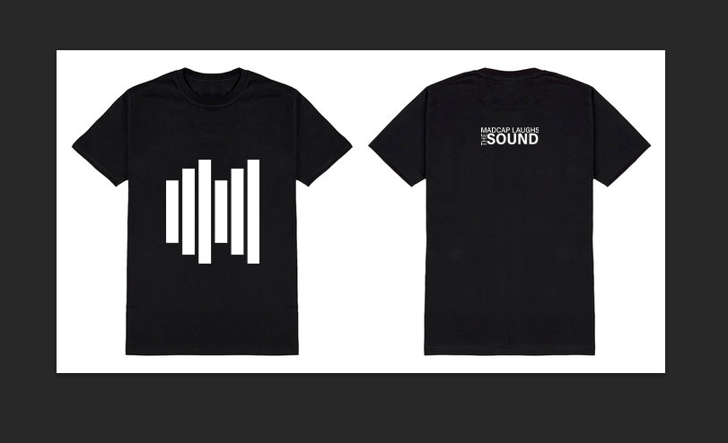
After completing his studies and receiving his diploma, Gerasenko fully immersed himself in musical activity. During the summer, he recorded three albums, two of which he would release at the end of the summer period: *6pm-7pm*, Untitled, and BlowFish.
*6pm-7pm* (September 2023)
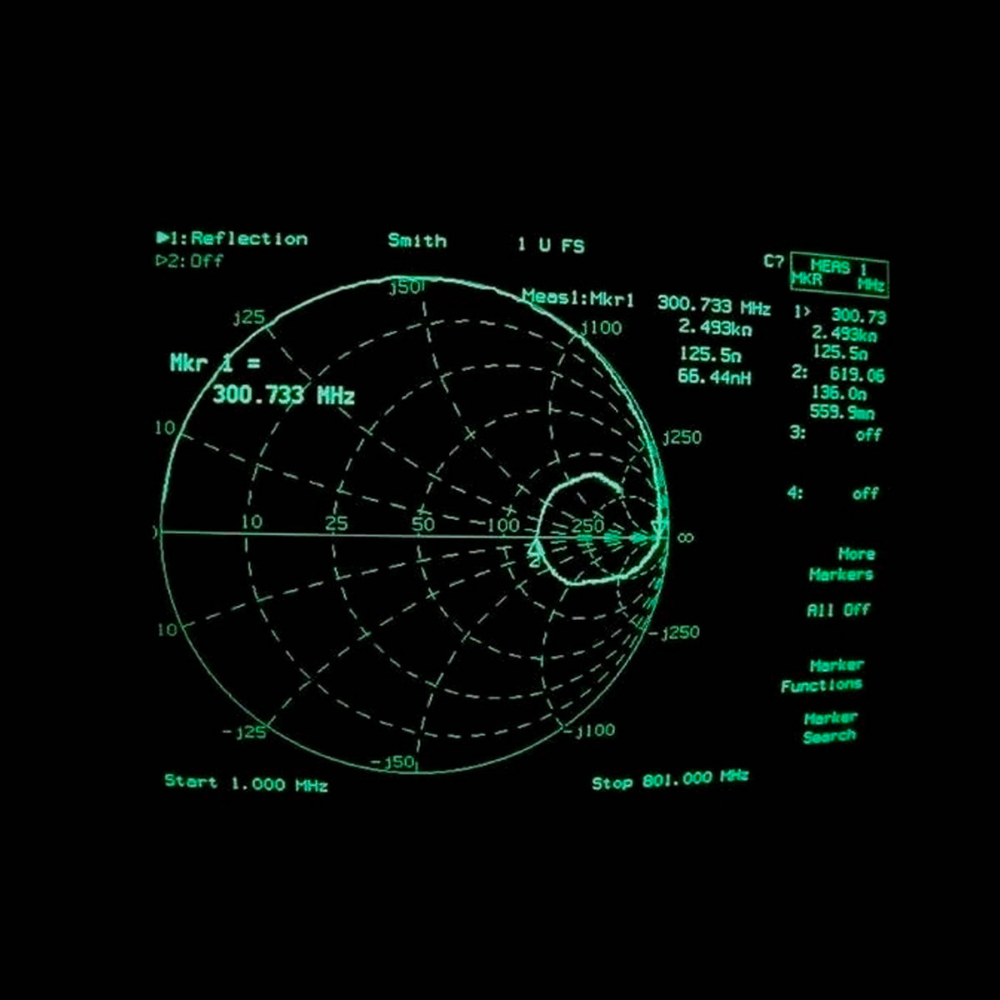
At the beginning of summer, he recorded material for the unreleased album *6pm-7pm* (released in September 2023). On the surface, it appears to continue Gerasenko's familiar lo-fi and IDM aesthetics, but its sound has an important conceptual feature: it is entirely previously unreleased archival material ("Unreleased album" ).
In terms of audio landscape, the album sounds like very harsh, noisy, experimental lo-fi. Its sound can be broken down into the following components:
1. *Internet aesthetics and creepypasta. * Tracks with titles such as "Maxresdefaultairplane" and "ab67616d0000b2" (as if copied from image codes or browser cache), combined with a general weirdcore atmosphere, create the sensation of *wandering through abandoned early-2000s web pages*. It is nostalgic yet simultaneously eerie digital noise.
2. *Analogue melancholy (lo-fi & noise). * The music is heavily submerged in distortion and lo-fi textures. Melodies sound muffled, as if coming from an old cassette player. On "Faithless", this melancholy reaches its peak, enveloping the listener in melancholic ambient passages.
3. *Rhythmic contrast. * Despite the overall melancholic mood, Gerasenko does not abandon broken rhythms. Tracks like "Bass Stabs" ground the album, adding dense bass accents and IDM structure.
Key tracks: "Maxresdefaultairplane" (08:05) — a monumental eight-minute opener with slow development, sampled air traffic communications, hypnotic pattern repetition, and sharp, loud glitch IDM drums. "Ekusutashi" (06:33) and "Latiumnae" (06:34) form the psychedelic centre of the album, featuring a sample of Ennio Morricone's "The Ecstasy of Gold" from The Good, the Bad and the Ugly. "Twiny Funny" (05:02) offers contrast, with a childlike, naive, almost ironic melody breaking through the dark weirdcore veil, creating strong emotional dissonance.
*6pm-7pm* is an excellent example of "raw sound without faces and algorithms", one that strains with its weirdcore aesthetic.
BlowFish and Untitled (August 2023)
In late August, at the end of the summer period, he recorded two albums simultaneously: BlowFish and Untitled. These two albums are crucial milestones in his work. While previous releases were chaotic and frightening, these two albums show how Gerasenko grew professionally and found his own unique, deep sound.
BlowFish
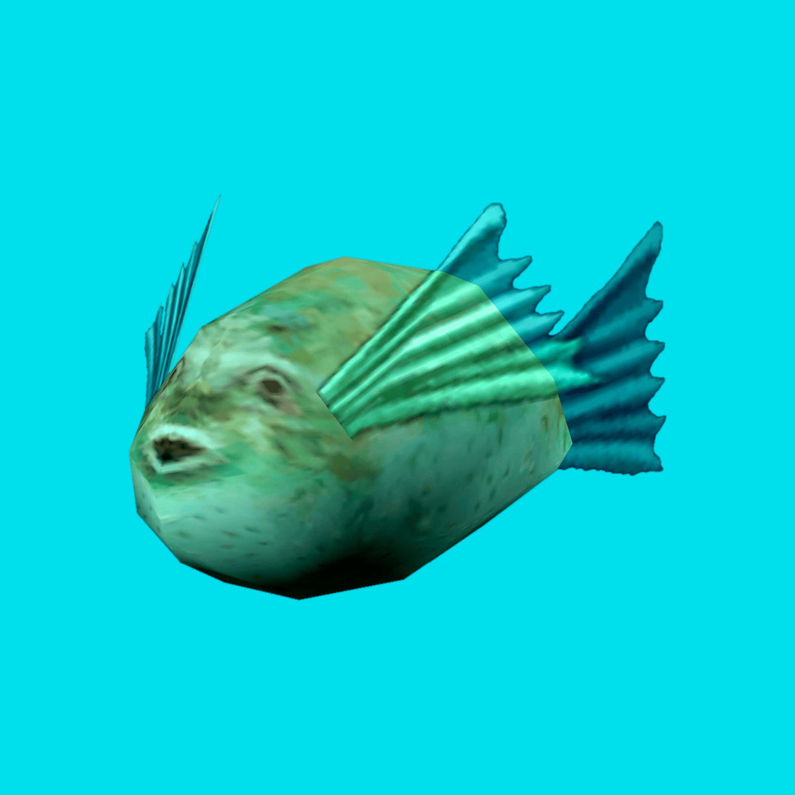
In simple terms, the sound of BlowFish is "intelligent", deep, and highly atmospheric electronics with a strong leaning towards the nostalgic sound of the 1990s. Three main characteristics define this release:
1. *Emphasis on melody and clarity. * Unlike previous "dirty" lo-fi experiments, here Gerasenko paid great attention to a different sonic quality. The sound became more melodic — though still lo-fi. The tracks no longer try to frighten the listener; they envelop them.
2. *Canonical IDM. * The album is strongly inspired by the cult era of British electronic music. The rhythms are complex, broken, yet smooth and meditative. The basslines have become dense and tangible.
3. Cinematic atmosphere. * This music easily conjures visual imagery: neon lights, a night city in fog, a train disappearing into darkness, or endless empty spaces (weirdcore* aesthetics).
Key tracks (by code names): *"px-HUDF-JD21" (06:20)* — an opening track with long, developing hypnotic patterns, combining soft analogue synths with a clear, unhurried rhythm, a classic example of deep ambient IDM. "239044177a" (05:36) — a more melancholic composition featuring a sample of Richard D. James from an interview, over broken IDM beats. "MkhE65c" (04:40) — a track focused on micro-sounds and glitches, futuristic, like a complex broken mechanism trying to play music with melody sample "TV on thet radio - DLZ". *"citadel+e2020" (06:12)* — another powerful atmospheric track; the title "Citadel" refers to *Half-Life 2*, using a sample from the game, resulting in a sci-fi, massive, and slightly cold sound. *"themanytimes+sounds" (05:26)* — built on a cold, paranoid sound using the concept of System Shock 2 (including a sample of SHODAN), gradually dragging the listener into a trance state. "therearetwokindsofpeople" (07:00) — the philosophical final seven-minute track, with a "floating" melody and a dialogue sample from The Good, the Bad and the Ugly.
Untitled
Turning to the second crucial album — Untitled (released August 17, 2023) — its importance in Gerasenko's discography cannot be overstated. While BlowFish captivated with its cinematic, neon, night-city atmosphere, Untitled is a manifesto of minimalistic sound, completely stripped of concepts, titles, and excess meaning. The author gave tracks technical alphanumeric codes (e.g., "30a", "f12", "s909") to force listening to the pure music rather than reading headings.
The sound of this album can be broken down into three main elements:
1. *Harsh, uncompromising IDM rhythms. * Unlike the smoother, more cinematic BlowFish, here the rhythm section moves to the forefront, sounding aggressive, dry, and punchy. Ragged, broken IDM structures strike directly. The sound lacks commercial smoothing — it is deliberately angular, prickly, and "dirty" .
2. *Experimental fusion with techno. * Gerasenko crosses classical broken IDM with the hypnotic energy of techno. From techno comes a dense, pressing kick drum and a cyclical, unstoppable pulsation. This creates a unique effect: music that is simultaneously broken (IDM) and danceable (techno), perfect for moving in the dark.
3. *Deep hypnotic trance. * Despite the harshness of the beat, the album induces a trance state through its length (tracks 6–8 minutes) and endless repetitions of analogue patterns. The rhythm may be harsh, but it is cyclical, confidently pressing the listener deeper into industrial hypnosis.
Tracklist breakdown: "30a" (05:49) — an opening track that gently introduces the album's atmosphere, with deep bass and a techno rhythm like a working computer, featuring a sample from Trainspotting (1996). "1993" (07:30) — a key track, its title a clear reference to the *golden era of early-1990s IDM*; a viscous, melancholic composition unfolding over seven and a half minutes. "dv99" (05:55) — a track focused on analogue glitches and sonic micro-errors, with a slightly more playful rhythm. "f12" (08:03) — the longest and most monumental track on the album, a true experimental techno piece, creating a feeling of total isolation from the outside world, very much in the spirit of rave parties. "s84" (03:01) — a shorter, more dynamic interlude with a dry electronic beat. "s909" (04:05) — a direct reference in its title to the legendary *Roland TR-909 drum machine*, exploring old-school drum sounds overloaded with a signature lo-fi filter. "t144" (05:25) — a final experimental techno piece.
On Untitled, the first official Madcap Laughs logo appears — a design of rectangular sound waves. This logo is still used to this day. The decision to create a logo was driven by a desire to develop a distinctive symbol that would set it apart from others; rather than using a text-based logo, Egor opted for a symbol, having gained design experience since 2015.
This album represents the peak of minimalism in qumcl's early work. There are no meme samples or flashy effects — it is a very mature work from an adult electronic musician coping with mental illness.
Late 2023: Schizophrenia and I AM ABSOLUTELY SURE THERE ARE NO CORPSES IN OUR KITCHEN
By the end of summer, in August, Gerasenko's mental health deteriorated significantly compared to early 2023. According to his friends and then-girlfriend, he was seriously planning suicide during this period but concealed it from everyone.
In early September, he released a trilogy of albums: Resonance, Selected Beats, and # (also known in his discography as "by syringeee with love" ).
Resonance (September 2023)
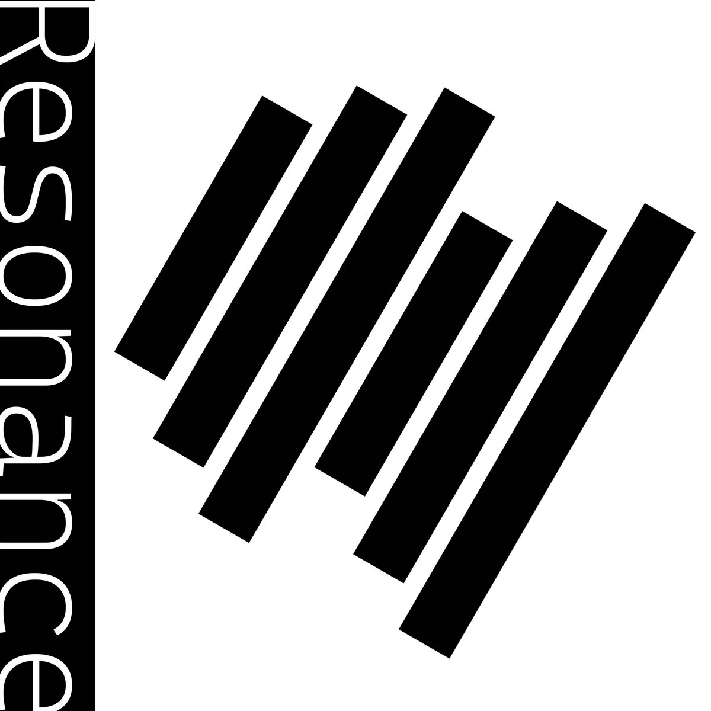
The album Resonance (released September 2023) is a powerful conceptual continuation of Untitled. Its sound can be described as industrial IDM techno with a deep science fiction undercurrent. Here, Madcap Laughs definitively establishes his signature style, blending harsh experiments with conceptual atmosphere.
Key elements of the audio landscape:
1. Direct connection to Half-Life. * The album title and track titles ("Resonance Prospector"*, "It's A Goddamn Safety Hazard") are overt homages to the famous "resonance cascade" and the disaster at Black Mesa. The sound is saturated with the atmosphere of a secret scientific complex: mechanical grinding, alarm signals, and the cold hum of machinery. "White Forest" (another important location from *Half-Life 2: Episode Two*) further reinforces this gaming nostalgia, making the album a conceptual tribute wrapped in harsh electronics.
2. *Dense techno groove and analogue grit. * The music does not devolve into pure abstract noise. It rests on a hard, dry IDM framework and lo-fi techno rhythms. The tracks sound analogue, rough, and clipped.
3. *Contrast between anxiety and irony. * Gerasenko skillfully juxtaposes polar moods. Grim post-industrial drones can sharply give way to tracks with absurd titles like "Wax Is Not Nip" or "Floyd Smiled Gently", creating a sense of light surrealism.
Key tracks: "Telex Communications" (08:15) — the longest and most monumental track on the release, an eight-minute immersion into hypnotic techno exhaustion with endlessly repeating rhythmic patterns and communication noises. "Short Destruction" (05:23) — an excellent example of harsh, broken IDM where musical elements break apart and reassemble on the fly. "It's A Goddamn Safety Hazard" (05:18) — the most cinematic track on the album, a true soundtrack to technological collapse where hard rhythm intertwines with a panicked industrial atmosphere.
This album sounds like the perfect balance between the harshness of Untitled, the atmosphere of Half-Life, and canonical glitch IDM.
Selected Beats (September 2023)
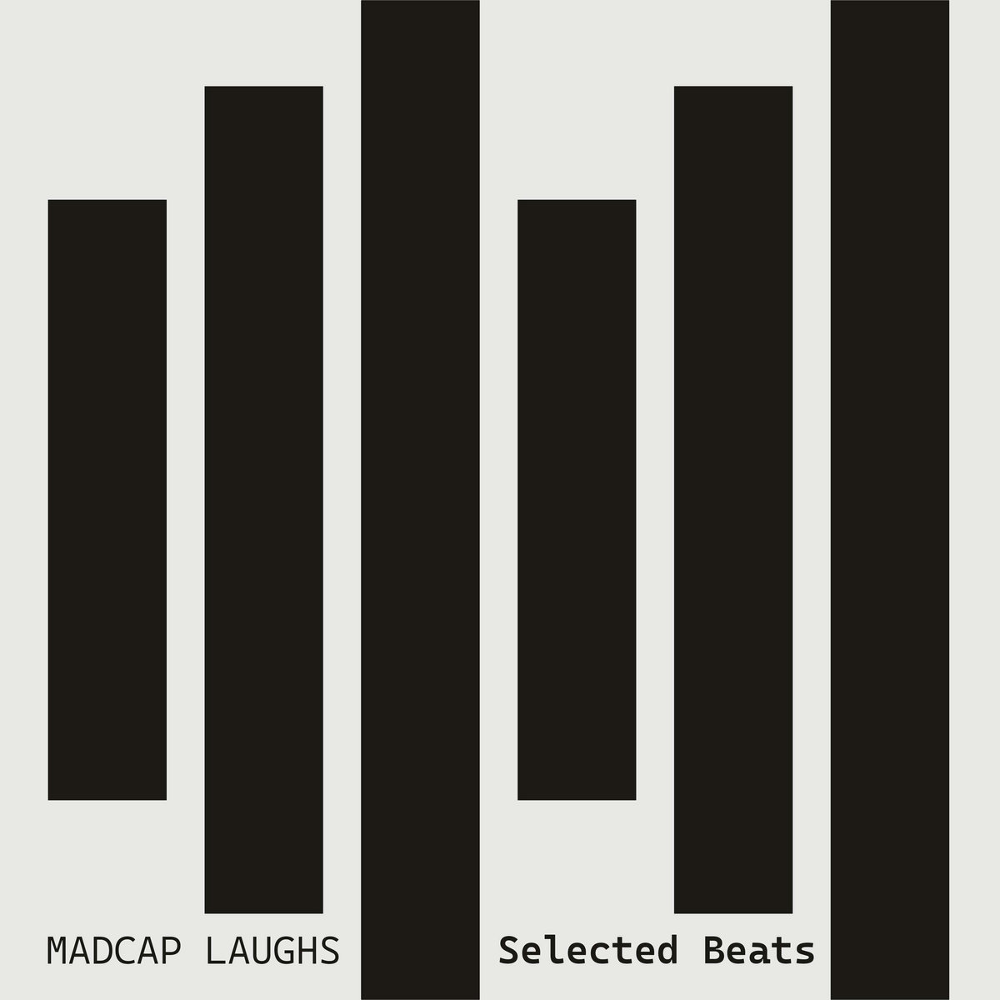
The compilation Selected Beats (released September 2023) is another fundamental milestone in Gerasenko's discography. However, its concept is different: it is not ambient, but an anthology of rhythmic patterns, breakbeats, and raw IDM accumulated during his experiments. The music here is entirely focused on groove, broken structures, and hypnotic beats — pure, harsh IDM mixed with ambient, experimental electronics, and techno.
The # Album (September 2023)
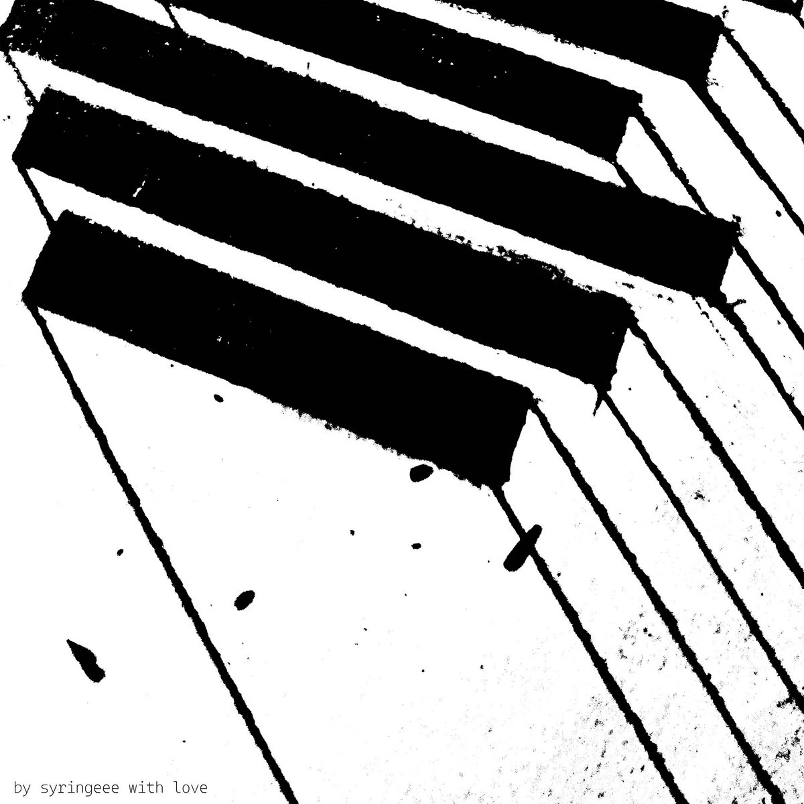
The album # (released September 27, 2023, also known as "by syringeee with love" ) features a signature dense lo-fi IDM and weirdcore sound with a deep immersion into gaming nostalgia and a raw cybernetic atmosphere. While previous releases were dark or harsh, this album sounds like a hacker thriller from the early 2000s, where every track is a digital system breach. The sound is rough but simultaneously groovy and rhythmic.
Track breakdown:
1. "Eat Like Him" (04:58) — an intriguing opener that begins with a viscous atmosphere and gradually develops into broken, sluggish IDM rhythm, creating a psychedelic effect.
2. "System Shock" (04:33) — a direct reference to the cult sci-fi game System Shock and the AI SHODAN; aggressive glitches, grinding synths, and a broken cyber-industrial beat simulate a computer system crash.
3. "Has To Be The Way We Like It" (03:21) — a more dynamic and compact track with broken IDM rhythms featuring a sample from a 1960s Pink Floyd interview.
4. "Deus Ex" (03:39) — another gaming homage, this time to the conspiracy cyberpunk of Deus Ex, with a very fast rhythm, spy thriller atmosphere, neon night cities, and dark technologies.
5. "Transit System" (07:36) — the longest and most monumental track, a hypnotic seven-and-a-half-minute journey with a monotonous beat like a train moving through darkness, featuring a sample from the Black Mesa remake.
6. "Riddim Menace" (02:57) — a short, angry, and aggressive track where breakbeats become ragged and prickly, creating a sense of danger.
7. "Acid Teddy" (05:26) — an experiment with classic acid sound, mixing characteristic acid synth modulations with raw lo-fi style.
8. "Who Wants To Work Today?" (02:33) — a mini-track built around a sample from an old Soviet film, turning everyday micro-sounds into a glitched rhythm that ends as abruptly as it begins.
9. "Syd Barrett" (03:15) — the final dedication to Syd Barrett (founder of Pink Floyd, whose solo album The Madcap Laughs gave Gerasenko his pseudonym), a melancholic, psychedelic closing point.
This release represents an ideal balance between cyberpunk aesthetics (System Shock, Deus Ex) and Gerasenko's personal history (the Syd Barrett tribute). The music sounds cohesive, like a single soundtrack to an old sci-fi film recorded on a worn VHS tape.
I AM ABSOLUTELY SURE THERE ARE NO CORPSES IN OUR KITCHEN (December 2023)
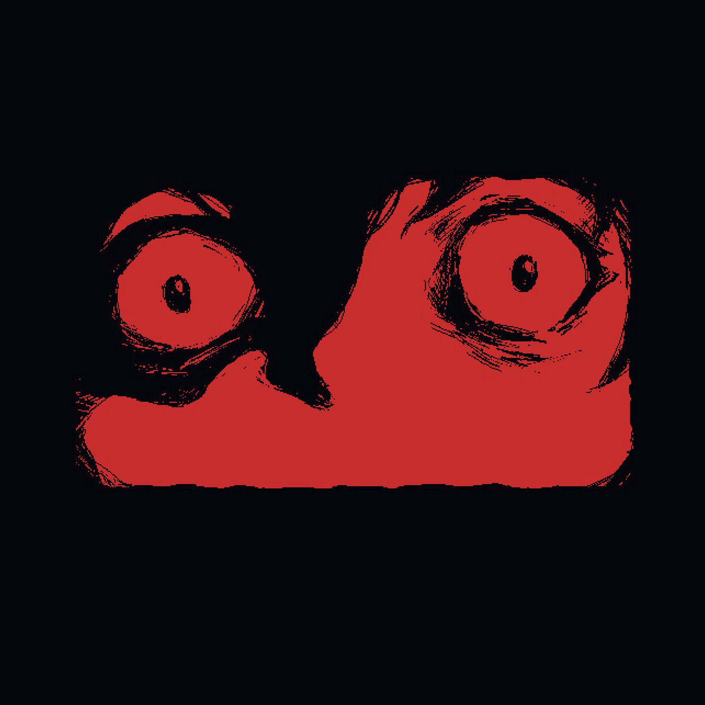
During the September period, Gerasenko recorded the most important album in his discography — one that changed his sound from early overloaded chaos to a more cinematic, ambient, minimalist approach using a completely different music production method.
The album I AM ABSOLUTELY SURE THERE ARE NO CORPSES IN OUR KITCHEN (released December 2023) is a fundamental turning point in Gerasenko's entire body of work. This release divides his discography into "before" and "after" , radically transforming the dirty, overloaded chaos of early recordings into mature, cinematic minimalism.
*Concept: a sonic imprint of schizophrenia. * This is a deeply personal, therapeutic, and unsettling work. Gerasenko has stated directly that the album is based on his real schizophrenic experience and paranoia. The conceptual inspiration came from the cult psychological text game Milk outside a bag of milk outside a bag of milk... , in which a simple trip to the kitchen or a shop turns into a psychedelic nightmare. The music is no longer merely a collection of tracks; it is structured as a *single 25-part audio diary* (from waking up to panic attack and taking medication).
*Key changes in sound (new approach). * Cinematic minimalism: instead of a dense wall of sound and aggressive broken rhythms, Gerasenko leaves much "air" . The sound becomes transparent, fragile, and unsettlingly realistic. Music works precisely: one melancholic synth passage or a distant rustle frightens more than tons of overloaded distortion. Everyday concrete music: the sound is filled with tangible field recordings, creating a chilling effect of presence. Subdued, muffled lo-fi: signature tape hiss is now used not for chaos but for the effect of "isolation" . The music sounds as if heard through water or through a locked bedroom door.
*Chronicle of sonic psychosis (album structure breakdown). * The album reproduces the phases of a mental crisis in detail.
1. Routine and rising paranoia — the short ambient opener "Wake Up" transitions into deceptively calm, melancholic "Good Morning" and everyday "Breakfast". But already in "Thinking In My Bed", the music slows down, immersing the listener in a viscous, sticky anticipation of disaster.
2. Peak of madness — on "The First Attack Of Schizophrenia" and "HALLUCINATIONS", minimalism gives way to sharp sonic artefacts, glitches, and disorienting frequencies. "VOICES" literally materialises auditory hallucinations through distorted audio fragments.
3. Chemical lull — on "I'M TAKING PILLS" and "I Feel The Effects Of The Pills", the rhythm completely dissolves. The sound becomes static, cottony, and sluggish. Withdrawal into oneself follows ("After The Pills, I Went Into Myself" ). The album's finale, through "I Got Paranoid" and "I Turned On The Music To Get Rid Of The Hallucinations", loops the nightmare, showing that for the author, music is the only way to escape the madness.
This album is a powerful art object. Gerasenko stopped simply writing "electronic beats" and created a tangible, eerie, yet incredibly beautiful soundtrack to human loneliness and the struggle with one's own mind.
Hospitalisation and Weirdrum Records
Unfortunately, during the period of recording this album, Gerasenko experienced several suicide attempts, leading to his early hospitalisation in a psychiatric facility from late September to early December. During his hospital stay, he was diagnosed with paranoid schizophrenia. He released the first part only after leaving the hospital on Weirdrum Records.
Regarding Weirdrum Records: Gerasenko joined the label by invitation in September 2023 and remained a member until autumn 2024, leaving due to a misunderstanding between the management and himself. He demanded that all his releases be removed from the label, though the label still lists some of his releases among its own.
Early 2024: I AM STILL ABSOLUTELY SURE THERE ARE NO CORPSES IN OUR KITCHEN and the vqopb era
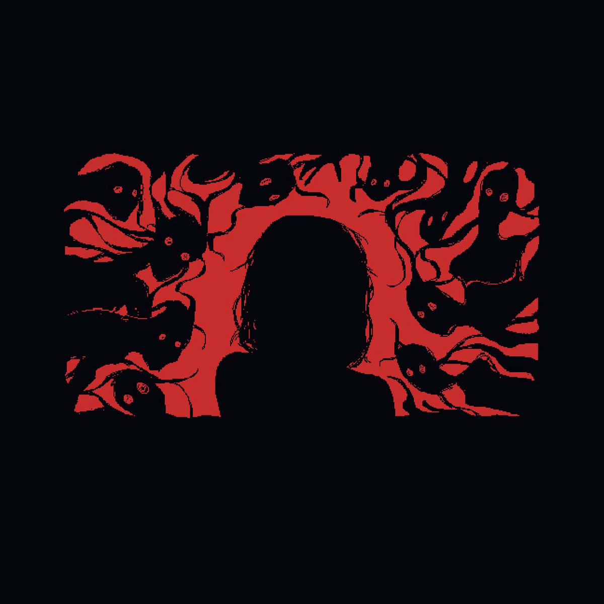
The album I AM STILL ABSOLUTELY SURE THERE ARE NO CORPSES IN OUR KITCHEN , released slightly later in February 2024, serves as the direct sequel to the December 2023 release. While the previous release documented the onset and progression of illness, this album represents the absolute peak of mind deconstruction. Soundwise, it became even more minimalistic — quiet in some places and radically aggressive in others. Gerasenko takes the concept of the game Milk outside a bag of milk outside a bag of milk... to its logical and tragic conclusion.
The sound architecture here becomes more complex, divided into *26 track-chapters*:
1. *Sounds of internal decay (beginning of the trip). * The album opens with the block "Brain Processing", "Nightmare", and "Psychosis". The musical approach shifts toward complete abstraction. Instead of familiar IDM rhythms, rare, abrupt analogue signals appear, simulating failures in the transmission of neural impulses. On "The Walls Are Covered With Blood...", minimalism gives way to a pressing wall of low-frequency drone.
2. *Concrete music and "domestic horror". * Gerasenko pushes the use of field recordings to frightening realism. On tracks such as "Where Am I?" and "Voices Haunt Me", the music fades, giving way to whispers. Signature tape hiss acts as white noise from which there is no escape. "I Am Afraid Of Teddy Bears" demonstrates how childhood triggers can transform into sonic nightmares.
3. *Tragic finale of the audio diary. * The album's conclusion represents the heaviest, sound-documented suicidal psychosis. On "Conversation" and "I Am Writing A Suicide Note...", the rhythm completely breaks down into glitched chaos, the sound darting back and forth, conveying panic. "Hello, My Name Is Egor..." is a thirteen-second track with no music, consisting only of a terrifying spoken-word confession. "SUICIDE + suicide note" is a five-minute climax where harsh, grinding industrial noise abruptly cuts off, and an actual suicide note is read. The final track, "A Few Hours Later, My Body Was Found", sounds like absolutely cold, empty, static ambient — the sound of an empty room where no one remains.
Gerasenko created one of the most unsettling, honest, and cinematic albums in the history of the Surgut underground. This is no longer background music — it is pure sonic performance, documenting the tragedy of human loneliness.
Both albums in the diptych completely changed Gerasenko's sound, and he would continue to use this approach in the future. Some musicians on Weirdrum Records have noted these two albums as among the strongest in Gerasenko's entire discography.
In March 2023, Gerasenko met Xiroach, which would later lead to a strong friendship, musical collaboration, and the creation of a netlabel in 2024.
The vqopb Era: Qulicker & Xiroach
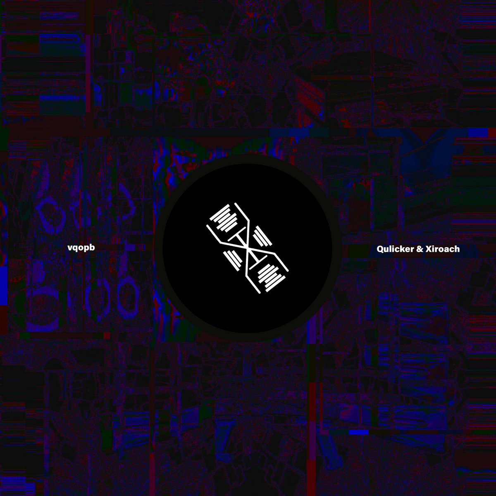
Following the early era and the NO CORPSES IN OUR KITCHEN period, the album vqopb (recorded in February, released July 2024) represents a unique turning point in Gerasenko's discography, released under the joint project Qulicker & Xiroach. In terms of sonic evolution, this release is a vast, boundary-pushing audio thriller. It combines the cinematic minimalism and intimate atmosphere of his "kitchen" diptych with an unexpected return to complex, broken club structures of the 1990s and 2000s.
On this album, Gerasenko and Xiroach perform a bold manoeuvre: they take the melancholic, isolated atmosphere as their foundation and cross it with a multitude of genres, from hard techno and acid to drum and bass and future garage.
Analysing this expansive *18-track* release, four key musical blocks can be identified:
1. *Cinematic sound design and gaming atmosphere. * "we are here" (00:46) — a short intro reminiscent of the opening of a disaster film or a field recording from an empty space. "arsenal gear ambient" (05:08) — a direct, deep reference to the cult Metal Gear Solid universe, a cold, spy-themed, paranoid ambient track perfectly capturing the feeling of being inside a vast, flooded technological complex.
2. *Psychedelic acid and harsh IDM. * *"f12+acid 7 ebs" (09:15)* — the longest and most monumental track on the release, crossing endless acid modulations with a complex, exhausting IDM rhythm. "2st vqopb bs" (05:32) and "vqopb" (06:57) — the central title themes, where broken digital glitches and a dry, uncompromising rhythmic framework collide with dirty lo-fi texture.
3. *Breakbeat, drum and bass, and rhythmic chaos. * "cactusi dinow" (07:04) and "from lincoln to surgut" (08:36) — tracks demonstrating Gerasenko's mastery of fast, broken beats, crossing old-school drum and bass, jungle, and overloaded techno with digital errors and harsh "Siberian" flavour. *"flts+16 dstrloop [ml mix]" (08:03)* — a hard techno track built on destructive distortion loops, aggressive, noisy, and dirty.
4. *Weirdcore paranoia. * "window peeper" (05:48) and *"whatthefuck?+withsounds7" (06:32)* — compositions that sound like direct heirs to the "schizophrenic" period, using everyday noises and strange sound artefacts to create pure paranoid discomfort.
The album vqopb is an incredibly dense and diverse collage. The artists proved that the ability to work with pure, deep ambient can be successfully integrated into dynamic breakbeat and techno structures, creating a captivating electronic tapestry.
Why vqopb Stands Alongside the Kitchen Diptych?
If I AM ABSOLUTELY SURE THERE ARE NO CORPSES IN OUR KITCHEN represented an internal, psychological revolution, then vqopb became a technical revolution and a massive step forward. This album deserves equal importance because it documented a crucial transition: Gerasenko learned to take the fragile, cinematic, and unsettling atmosphere of loneliness and masterfully integrate it into complex, dynamic dance rhythms. It is no longer merely a therapeutic diary within four walls, but an emergence into the level of mature, complex sound design.
Three global changes in sound that vqopb introduced:
1. *Synthesis of isolation and large-scale groove. * While I AM ABSOLUTELY SURE... was locked-in, quiet, and domestic, vqopb proves that paranoia or deep melancholy can sound large, groovy, and professional — crossing unsettling weirdcore with old-school drum and bass and acid techno.
2. *Cinematic quality at a new level. * Earlier, cinematic quality was built on household sounds (whispers, pills). In vqopb, it becomes epic and sci-fi. "arsenal gear ambient" is a full-blown, Hollywood-level soundtrack to a spy techno-thriller.
3. *Mature deconstruction instead of chaotic noise. * On early releases, overload was often chaotic. Here, every glitch, every distortion loop, and every broken breakbeat line is calibrated with mathematical precision. It is "intelligent" aggression — wild, raw, and underground, but technically far superior to everything that came before autumn 2023, while retaining the same clipped style.
May--June 2024: Beginning of the summer period — foundation of Xeuqra, qumcl, qu12
If previous periods were important in Gerasenko's discography, each month saw his sound improve further, demonstrating how rapidly his production evolved over a short time. Due to his illness, Gerasenko never remained idle creatively. Between February and May 2024, he recorded approximately 180–200 tracks, reflecting his remarkable productivity.
He later commented: *"I was actually the most productive musician in my room in 2024, lol! Joking aside, 2024 was a significant year in terms of bright productivity and the rapid evolution of my sound. I quickly understood how Ableton works, how sound works, how synthesisers work. I immersed myself more and more in the musical environment, and I had a requirement for myself: at the beginning of the year, I made 2–3 tracks every day, sometimes giving myself days off, but only towards the end of May did I get tired of such strict demands on myself."*
Foundation of Xeuqra Records
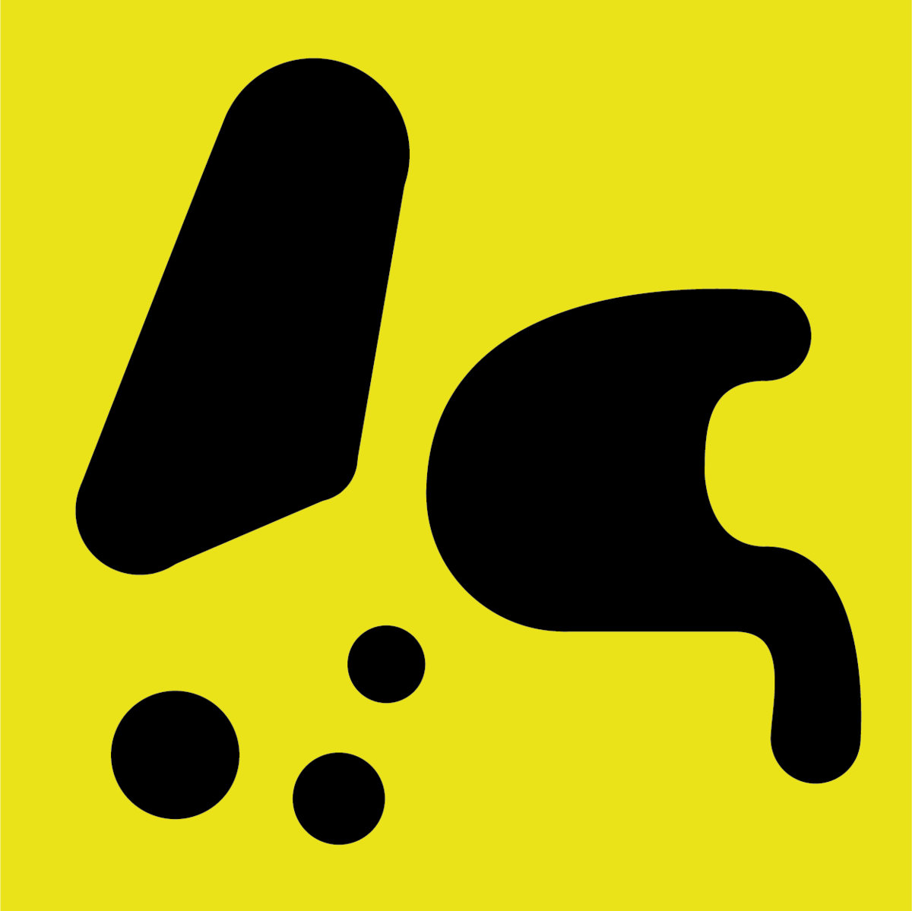
Gerasenko and Xiroach, having intended to found a label since 2023, established the netlabel Xeuqra (Xeuqra Records) and released their first release on it: Xiroach's Xiroachlovesyou, released 29 May 2024. Xeuqra became the foundation for their sound following the release of vqopb. Alongside collaborative works, they also pursued individual projects, releasing them on their label, thereby creating a label sound they defined as "Intelligent Raw Music" or "Raw Data Music" .
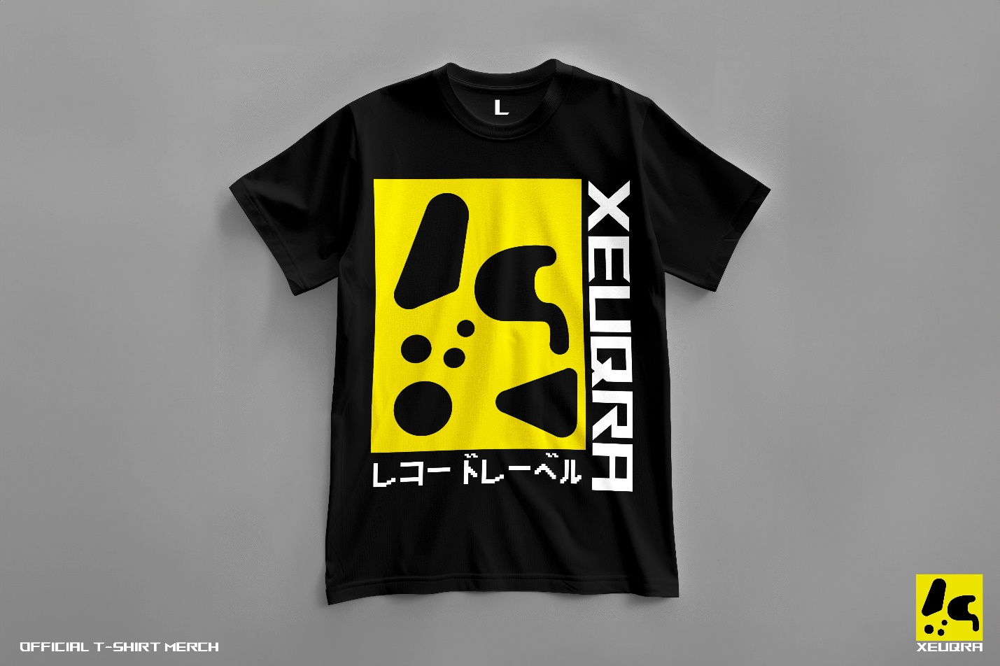
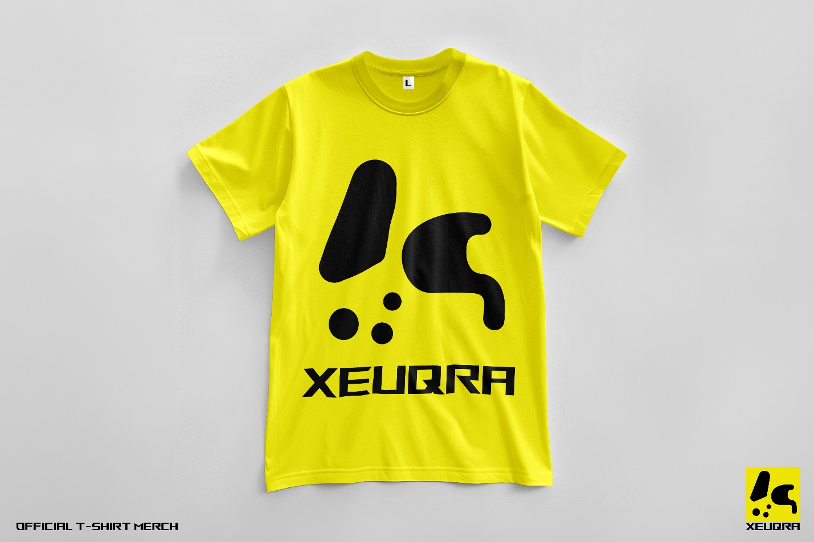
Gerasenko noted: "When we were creating vqopb, we thought about the label more and more, and we defined our sound with genres so that it would be clear how we sound — similar to how Rephlex created the definition 'braindance' for themselves, but we didn't want to be just another copy of AFX. We simply gave our own music a term."
For the label's logo, Gerasenko took soft, rounded shapes and colours in the style of SpongeBob SquarePants, while Xiroach came up with the name Xeuqra to make the label stand out among other music netlabels.
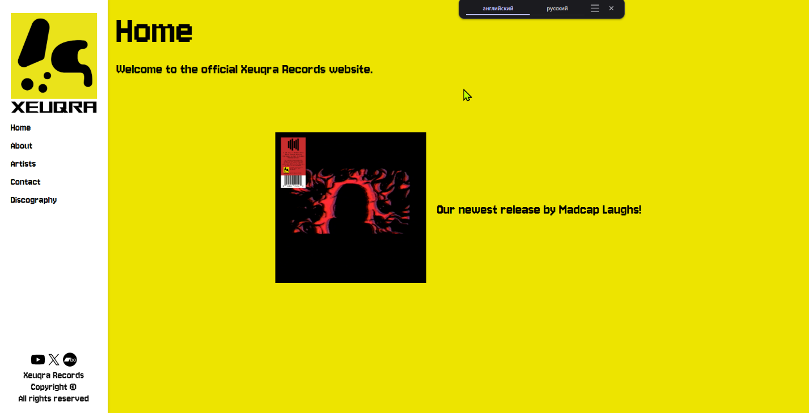
"We also had intentions for merchandising," Gerasenko added. "I still have prototypes of vinyl, cassettes, and T-shirts of various designs, but I will most likely realise them when the netlabel becomes more popular or when it is financially feasible."
New Aliases: qu12 and qumcl
From May, Gerasenko began using two other pseudonyms for his music: qu12 and qumcl.
gmod ambience (May 2024, as qu12)
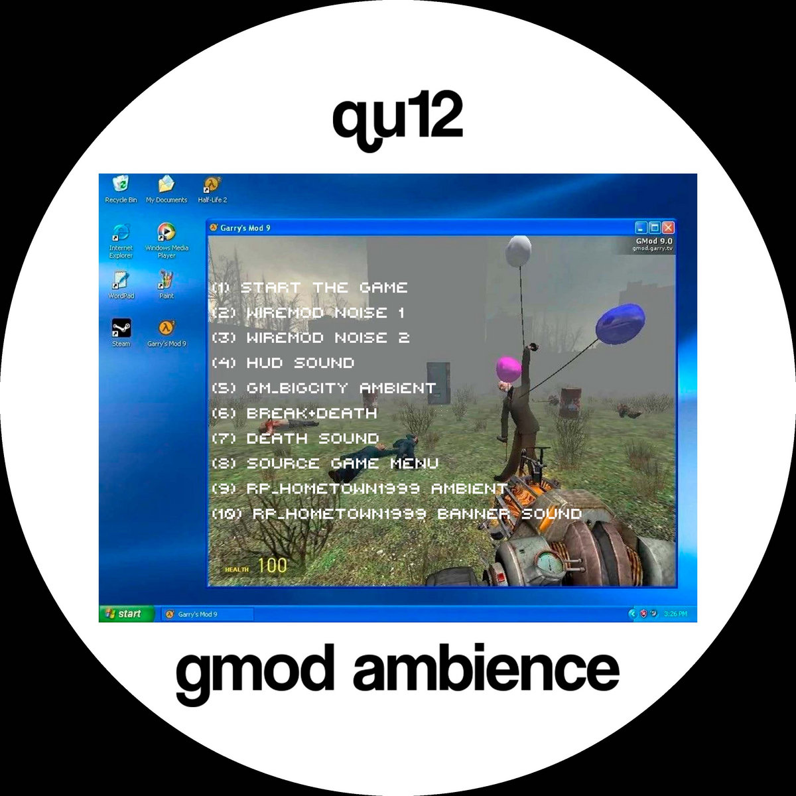
The album gmod ambience (released May 2024 under the pseudonym qu12) is one of the most radical, uncompromising, and conceptual experiments in Gerasenko's discography. Its significance is on par with vqopb and I AM ABSOLUTELY SURE THERE ARE NO CORPSES IN OUR KITCHEN, but from the perspective of absolute radical technological minimalism and sonic emptiness.
The key fact that completely transforms perception of this sound: the album was created entirely inside the game Garry's Mod, without using any DAW programmes (such as FL Studio or Ableton) or digital audio editors. Gerasenko assembled the sonic canvas directly within the Source sandbox, using in-game tools.
The sound of gmod ambience can be broken down into three key aspects:
1. *Instrumental game design instead of synthesisers. * The tracks are built on pure in-game triggers, artefacts, and mechanics. The titles encode specific tools: for example, "wiremod noise 1" and "wiremod noise 2" are constructed around signals and noises from the popular Wiremod modification, while "hud sound" and "death sound" dissect the interface sounds of the Source engine itself.
2. *Liminal spaces and Backrooms vibe. * Tracks such as "gm_bigcity ambient" and the seven-minute "rp_hometown1999 ambient" perfectly recreate the oppressive, unsettling atmosphere of empty game maps — pure weirdcore and lo-fi noise, the sensation of being completely alone on a vast server where only the hum of textures and distant system bugs are audible.
3. *Raw physics of sound. * Since the music was not processed with commercial plugins, it sounds extremely dirty, sharp, and "straightforward" . Tape hiss and digital crackle feel not like an applied effect but like the natural noise of a collapsing virtual world. The cover art is equally raw and minimalistic.
Tracklist (10 chapters of simulation): "start the game" (00:16) — a short click launching the simulation; "wiremod noise 1" (03:33) — cyclic, mechanical noise ambient; "wiremod noise 2" (05:11) — deeper and more abstract sonic chaos; "hud sound" (00:45) — micro-glitch from interface elements; "gm_bigcity ambient" (03:38) — cold, empty drone ambient of the famous city map; *"break+death" (00:32)* — a sharp, broken breakcore burst simulating character death; "death sound" (00:09) — micro-sample of the final chord; "source game menu" (00:37) — nostalgic hum of the Valve game main menu; "rp_hometown1999 ambient" (07:20) — monumental, melancholic finale, immersing the listener in the fog of an abandoned role-playing city; "rp_hometown1999 banner sound" (00:15) — final technical echo. Gerasenko proved that creating dense, unsettling intelligent electronics requires neither expensive studios nor commercial software — only Garry's Mod and a unique vision of sound.
"This is probably the absolute worst album in my discography, but at the same time it's the most minimalist one – there's absolutely no music on it whatsoever. I recorded it on a whim, though the only exceptions are the "Enrich 33E – Nothing (Vol 0–2)" releases, which I put out on Xeuqra."
AAEX (Madcap Laughs) — June 15, 2024
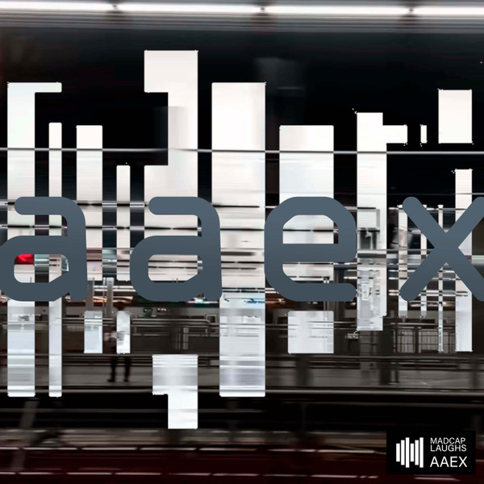
After the foundation of the Xeuqra label, June became a month of intensive experiments and preparation for a grand summer cycle. Egor released several records that stylistically stood at a crossroads: they combined the rawness of early Madcap Laughs with a new, more cinematic clarity that would fully blossom in July.
This album, released under the old pseudonym, serves as an important transitional bridge. It sounds like a cleansing of the palette before larger canvases.
Concept and sound: Aaex dives into the realms of drill 'n' bass, IDM, and lo-fi electronics. The album is characterized by "fast, fragmented beats, layered soundscapes (glitch, ambient, distortion), and the addition of analogue warmth through saturation and tape emulation." It is simultaneously a return to the chaotic energy of the early works and a demonstration of increased control over sound.
Significance: This release is a perfect example of the "raw energy and experimental nature" of that period, which Egor would later shape into the more refined forms of Egyptology and Olympians. In 2025, the album would receive a remaster (AAEX Remastered Edition), emphasizing its importance in the author's eyes.
Yellow Pills EP (June 2024, as qumcl)
The next mini-album, Yellow Pills EP (released June 2024), is a striking example of Gerasenko merging his best techniques from previous periods. While the "Kitchen" diptych was quiet and minimalist, and vqopb was a large-scale, dark techno thriller, this release sounds like an acid-hallucinogenic breakbeat collage. The title "Yellow Pills" references the same medical theme of psychosis and medication, but the music radically changes mood: instead of paranoia, a dynamic, bright, and pleasingly insane rave emerges.
The sound of this five-track release can be broken down into three main elements:
1. *Return to furious breakbeat and jungle. * The breakbeats are fast, crumbly, and complex, colliding with glitches, causing the rhythm to constantly mutate.
2. *Dense acid synthesis. * The mini-album is saturated with the classic "acid" screech of analogue synthesisers, with basslines twisting into psychedelic spirals, evoking the atmosphere of an old underground 1990s rave.
3. *Toy-like weirdcore. * Beneath the dirty lo-fi noise lie deceptively naive, almost childish melodies and sounds, creating a powerful contrast — the music feels simultaneously playful and unsettling.
Track breakdown:
1. "Acid Party" (04:51) — a powerful opener with a dense, driving techno rhythm meeting *ringing 303-style acid synths*, demonstrating Gerasenko's signature dirty, groovy swing.
2. "Great Toys To Play With" (04:16) — one of the most conceptual tracks, using broken IDM rhythms and sound textures reminiscent of *old 8-bit consoles* or broken children's musical toys, hiding complex and prickly sound design behind a "toy-like" surface.
3. "Fantastic Imagination" (03:41) — the most psychedelic moment, where melodies literally blur as if in a hallucinatory dream, sounding airy while lo-fi artefacts and constant tape hiss never let the listener forget the artist's underground roots.
4. "Yellow Pills" (03:54) — the central title track, a manifesto of "chemistry of decay", where fast, broken drum and bass rhythms collide with a paranoid atmosphere, the sound darting back and forth, perfectly conveying a state of consciousness altered by medication.
5. "Some Kind Of Song" (02:42) — a short finale in the aesthetic of deconstructed weirdcore, the most chaotic track, where musical patterns constantly break down into pure glitch and noise, like a sharp exit from a trip, leaving a slight sense of disorientation.
Yellow Pills EP — the first release under the qumcl alias — shows that Gerasenko can be not only dark but also intensely danceable and rave-oriented. He took the harshness of Untitled and the hallucination-laden atmosphere of the "Kitchen" and transformed them into a bright, acidic IDM breakbeat.
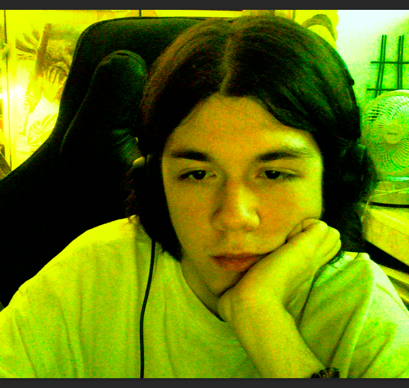
Lyadina and Baba Yaga (June 2024)
Following the EP, the album Lyadina and Baba Yaga (released 25 June 2024) represents perhaps the most distinctive and conceptual turn in Gerasenko's discography. While the "Kitchen" diptych explored the terror of a locked apartment, and vqopb and gmod ambience delved into digital liminal spaces, here Gerasenko makes a sharp leap toward folkloric post-industrial horror (folk weirdcore).
The sound of this large-scale release — comprising 20 tracks — can be described as an unsettling audio fairy tale. Gerasenko takes images from Slavic folklore and dissects them through the lens of his signature Siberian isolation, analogue noise, and ambient structures. The musical canvas can be divided into three key elements:
1. Slavic folk foley and concrete music. * For the first time in his discography, Gerasenko works intensively with mythological themes. The sound is filled with dark field recordings and foley effects: instead of cyberpunk, we hear the chilling rustles of the deep taiga ("Quietness Of Taiga"* ), the creak of wooden floorboards in an old hut ("Baba Yaga's Hut" ), and the dull strikes of a hammer ("The Work Of A Blacksmith" ). Gerasenko noted: "I didn't take inspiration from Russian dark ambient projects, but I took as an example the fact that I lived next to a forest, and my family and I went out into nature — not into the wild taiga as such, but still. I thought, why not?"
2. *Rusty lo-fi and noise IDM. * The fairy tales are stripped of any magic — they sound raw and industrial. Signature tape hiss and glitches turn folk narratives into digital nightmares. Tracks such as "Vicious Cycle" and "Koschei The Immortal" are short, prickly, and uncompromising flashes that disorient the listener.
3. *Future garage elements. * A surprising element appears in "The Frog Princess", which is made in a future garage style with dark ambient overtones, showing Gerasenko blending genres on this album.
Key milestones of this audio journey: "Quietness Of Taiga" (03:18) — the opening track, grounding the listener in the Siberian context, deep, cold ambient pierced by rustles of branches and distant wind. "Baba Yaga's Hut" (09:07) — the monumental nine-minute centrepiece, a true ambient drone thriller that develops extremely slowly, gradually layering analogue noise, creaks, and oppressive drone, forcing a physical sensation of paranoia before the locked hut. "The Dark Castle" (05:33) and "Spiritual Calling" (05:28) — the deepest and most cinematic electronic canvases on the release, where Gerasenko moves into pure, detached psychedelia and meditative trance. Lyadina and Baba Yaga proves that Gerasenko solidified his new, cinematic, and minimalist approach to sound, transforming childhood fairy tales into an unsettling, authentic Siberian art object.
Gerasenko later commented on his equipment: "To be honest, in terms of equipment I only used a cassette deck to record songs onto tape, some of which I gave to friends. I didn't have any more equipment. I didn't even have normal headphones, let alone speakers. I made my music on broken, shitty headphones, but that didn't stop me from making music in the lo-fi style."
After the labour-intensive period from February to May, Gerasenko actively released his music online throughout the summer and autumn.
list of bastards, cocksuckers, cunts, fuckers (July 2024)
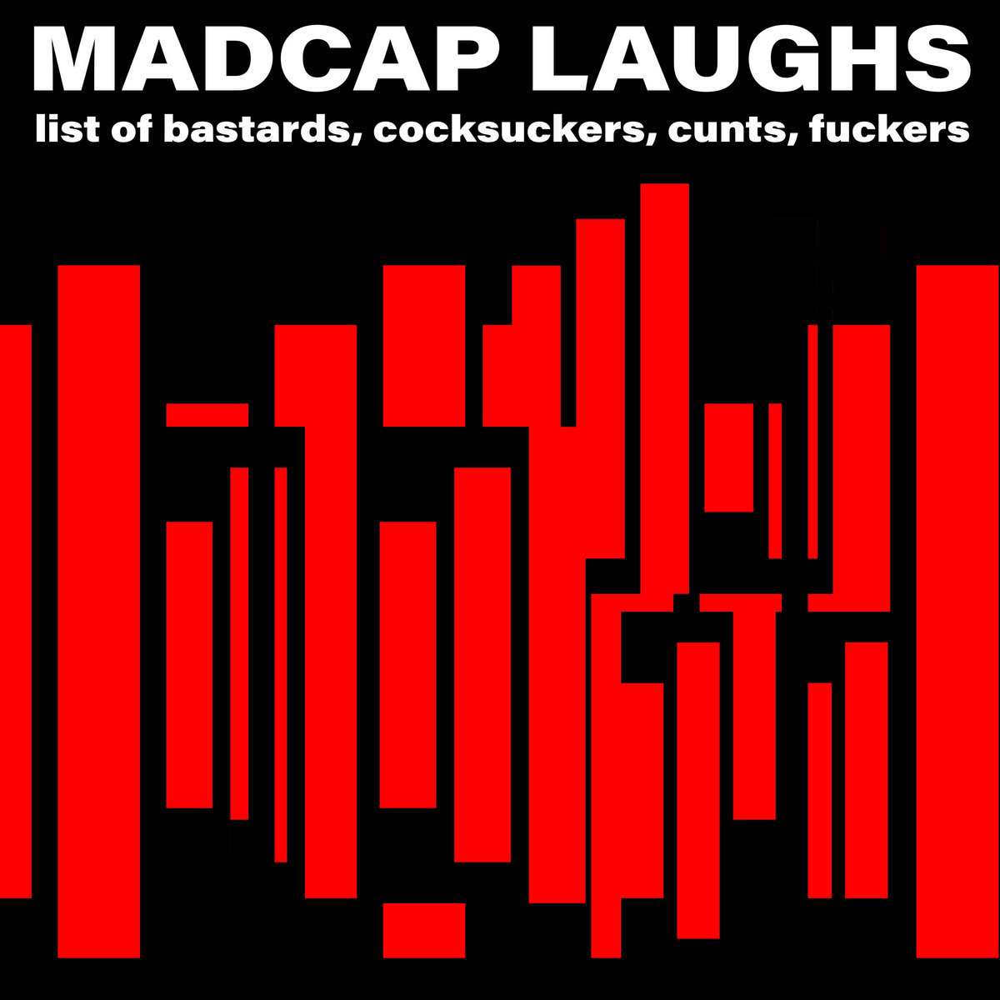
In early July, one of his most provocative albums was released: list of bastards, cocksuckers, cunts, fuckers. To date, it remains Gerasenko's most provocative album, with a sound in the spirit of vqopb. The story behind its creation is particularly interesting: Gerasenko recorded it in response to censorship by the distributor Tunecore.
"Xiroach and I founded the Xeuqra netlabel at the end of May so we could release our music and create our own sound. To get our music onto streaming platforms, we chose to use Tunecore, but that fucking site pissed me off because it censored absolutely all of my albums — by title, by image content, and by the sound of the tracks. In the end, it pissed me off so much that I made a very provocative album against them. And the funny thing is, the first time I managed to release it through them, but the second time they rejected it. It's very loud, unprocessed, and clipped."
The album is built around the idea of deliberate degradation, chaos, and provocation. Its tracks include:
1. "No Me Even Me" (5:18) — an opening track with deliberately broken grammar, parodying pop songs;
2. "What A Fucking Great Composer" (3:40) — sarcastic self-deprecation or mockery of others; "Transformation Into The Xiroaches" (5:32) — imitation of Xiroach's sound;
3. "Fuck You Tunecore" (4:23) — a direct message to the distributor; "I Have Junky Or Got The Janky" (5:01) — about addiction and brokenness;
4. "Well... Your Rhythm Is Broken, That's The Only Thing" (6:29) — the longest of the first six, a metacommentary on criticism he had received;
5. "Make That Noise" (5:19) — a call to noise;
6. "Let's... What?" (5:06) — a thought fragment;
7. "Every Track Is Getting More Fucked Up" (5:05) — a direct promise of progressive chaos (a meta-title);
8. "F12 (Bzh Mixed)" (8:28) — a track from Untitled in a different remix;
9. "{Displaystyle Pi}" (5:21) — mathematical irony, a formula that appears broken;
10. "I Think About Dream, Sometimes" (6:36) — a final track, relatively calm in title but as harsh as the rest.
The album is characterised by its anti-commercial message (a spit at Tunecore), self-reflection about the deterioration of music throughout the album, broken English as part of the aesthetic, and mathematical mockery (displaystyle Pi — LaTeX code that does not render as a formula). It is a conceptual album about disintegration: musical, mental, and linguistic. Weirdcore manifests in tracks becoming increasingly distorted, with broken rhythms, glitch, and aggressive sound design.
Beginner's All-purpose Symbolic Instruction Code (July 2024, as qu12)
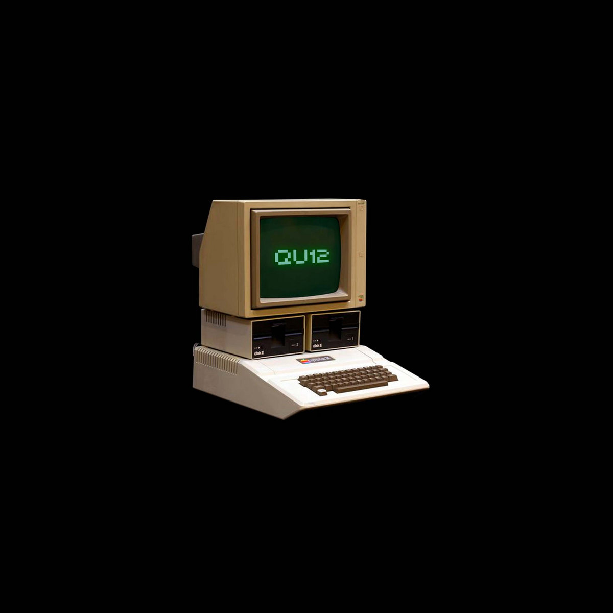
The mini-album Beginner's All-purpose Symbolic Instruction Code (released July 2024 under the pseudonym qu12) — whose title decodes to BASIC, the legendary, simple programming language of the 1960s--1980s — is a true ode to old computer engineering, chiptune, and raw machine IDM. Gerasenko takes nostalgia for the era of floppy disks, MS-DOS, and early personal computers, dissecting it through lo-fi jungle, breakbeat, and techno rhythms.
Detailed track breakdown:
1. "Computer Simulation" (06:01) — a measured six-minute opener that literally launches the system, built on soft, nostalgic synthesiser textures and a cyclical, slightly sluggish IDM rhythm, creating the sensation of a prolonged virtual world loading.
2. "Amigo_Track_5" (04:28) — a wordplay on the cult Commodore Amiga computer, sounding very old-school, with broken breakbeats mixed with characteristic pixelated chiptune sound — dirty yet incredibly groovy.
3. "Without Computer Outside" (04:52) — jungle textures, an early mix of a track previously heard on vqopb.
4. "[Live Modular Noise]" (04:54) — a live improvisational noise performance, the most chaotic and experimental track, where musical patterns give way to analogue screeching, frequency modulations, and unpredictable glitches — pure underground noise ambient.
5. "ENS Code 01" (07:20) — the longest track on the release, a monumental seven-minute marathon, smoothly immersing the listener in deep hypnotic trance through a monotonous, ceaseless dub techno groove and cycling computer codes.
6. "Tauc 7" (05:26) — mathematically precise, strict, and cold IDM, the rhythm section striking very dry and clearly, like a processor under heavy load.
7. "Installation Remix" (03:21) — an alternative take on the industrial theme from Resonance, a dynamic, prickly track with broken breakbeats where interface and software installation sounds are transformed into full musical instruments.
8. *"Microprocessor+Os Sounds" (05:34)* — Gerasenko builds the track from *system notifications of Macintosh and Windows 95--98*, blending them with jungle and a deep, farewell ambient undertow — another perspective drawing from vqopb.
"This album is really just a collection of tracks from the Resonance and vqopb days; to be honest, I hardly ever listen to it anymore."
This first release under qu12 demonstrates how skillfully Gerasenko works with the aesthetics of computer retrofuturism (computer music). If gmod ambience was music written inside a game, here he recreates the very spirit of old software and hardware, turning dry system sounds into deep, intelligent electronics — a tendency first heard on vqopb.
July 2024: Mythological Cycle, Analog Experiments and Chemical Delirium
By summer 2024, Gerasenko shifted dramatically from intimate domestic horror toward large-scale mythological imagery, while simultaneously releasing a series of raw experiments under his old alias.
July 7--8: Raw Experiments and Archival Dumps (Madcap Laughs)
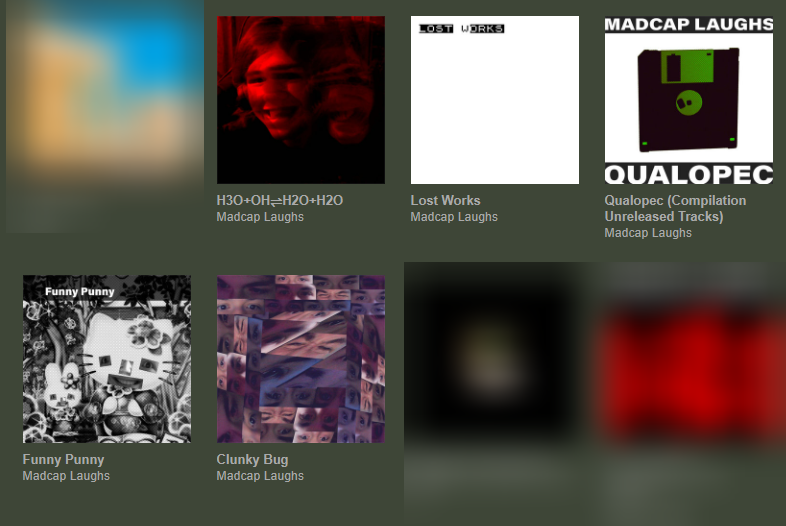
Clunky Bug (July 7, Madcap Laughs): A musical microcosm frozen in an isolated Siberian room. Hypnotic melodies layer over fast, crumbly jungle rhythms, creating psychological dissonance. Aggression here does not conflict with fragility — they coexist in a single weirdcore space, turning the narrow theme of "insect life" into a universal experience of digital paranoia.
Funny Punny (July 8, Madcap Laughs): A digital explosion of absurd joy born from deep boredom — deliberate unseriousness where strange sounds and playful motifs collide with fast rhythms. Even noise elements do not threaten; they only reinforce the comedic atmosphere, as if the computer itself is amusing itself.
Qualopec (Compilation Unreleased Tracks) (July 8, Madcap Laughs): The first collection of unreleased experiments from summer 2023 to spring 2024. Not merely a sketchbook, but a sonic portrait of an artist on the verge of self-discovery, where experimental IDM refuses purity in favour of raw sincerity.
Lost Works (July 8, Madcap Laughs): A digital archive of a lost era where retrofuturism collides with gritty reality. Micro-sounds and glitches imitate the internal screams of dying equipment — from disk drives to the blue screen of death.
H₃O+OH⇌H₂O+H₂O (July 21, Madcap Laughs): A conceptual mini-album built around the chemistry of acids and pharmaceutical delirium. The *8-minute track "Benzhexol"* references the strong hallucinogenic drug trihexyphenidyl, which induces severe deliriant hallucinations. The sound is viscous and oppressive, with sudden noise attacks simulating mental blackouts — the opposite of psychedelic expansion, continuing the line of his earlier "schizophrenic" albums.
By summer 2024, Gerasenko shifted dramatically from the intimate domestic horror of the Kitchen diptych toward large-scale, cinematic mythological imagery. The four albums released under his main qumcl alias in July 2024 form an interconnected "Mythological Tetralogy" — a cohesive sonic journey exploring ancient Greece, Egypt, and the liminal spaces between.
This cycle represents a quantum leap in his production quality, compositional ambition, and conceptual depth. It solidified qumcl as a mature, visionary project capable of creating vast, immersive sound worlds.
The Tetralogy's Structure and Narrative Arc:
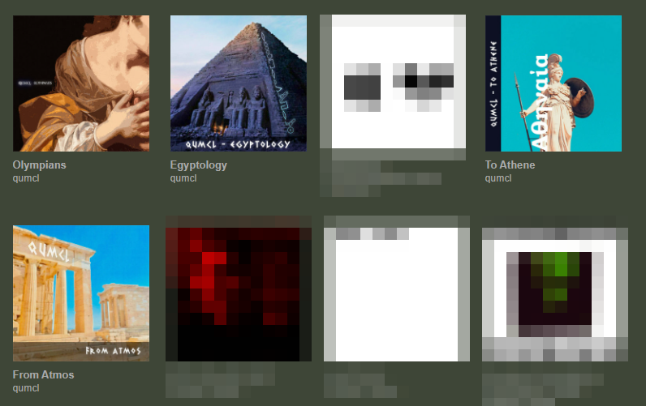
The four albums are best understood as a single, unfolding cinematic experience:
1. From Atmos (July 5) — The Cosmic Prologue
2. To Athene (July 6) — The Ruins of Greece
3. Egyptology (July 14) — The Tombs of Egypt
4. Olympians (July 26) — The Power of Olympus
Together, they move from the cold emptiness of space to the crumbling grandeur of ancient civilisations, ending in a cathartic, explosive celebration of mythic power.
1. From Atmos (July 5, 2024) — The Cosmic Prologue
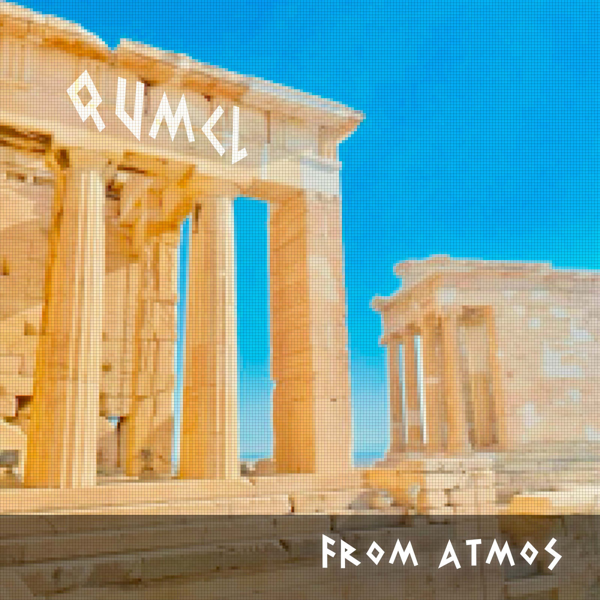
From Atmos acts as the overture to the entire cycle. Its title, a play on "atmosphere" and "atoms," immediately establishes a sense of scale — cosmic, elemental, and vast.
The album is not set in any specific historical period but in a liminal, pre-creation void. It serves as a "cosmic bridge" between the earlier, claustrophobic cybernetic decay and the ancient worlds to come. The listener is suspended in space, observing abandoned orbital infrastructure and the silent birth of myth.
Deep, cold, and submerged drones dominate. Rhythms are present but buried, acting more like distant pulsars than danceable beats. The tape hiss and lo-fi textures are not a sign of decay here but of distance — as if the music is a faint transmission from a forgotten galaxy. It is dark ambient at its most majestic and lonely.
Place in the Tetralogy: It establishes the spatial and philosophical scale of the cycle. Without this context, the ancient ruins of the following albums would feel less profound. This is the sound of the potential for history.
2. To Athene (July 6, 2024) — The Ruins of Greece
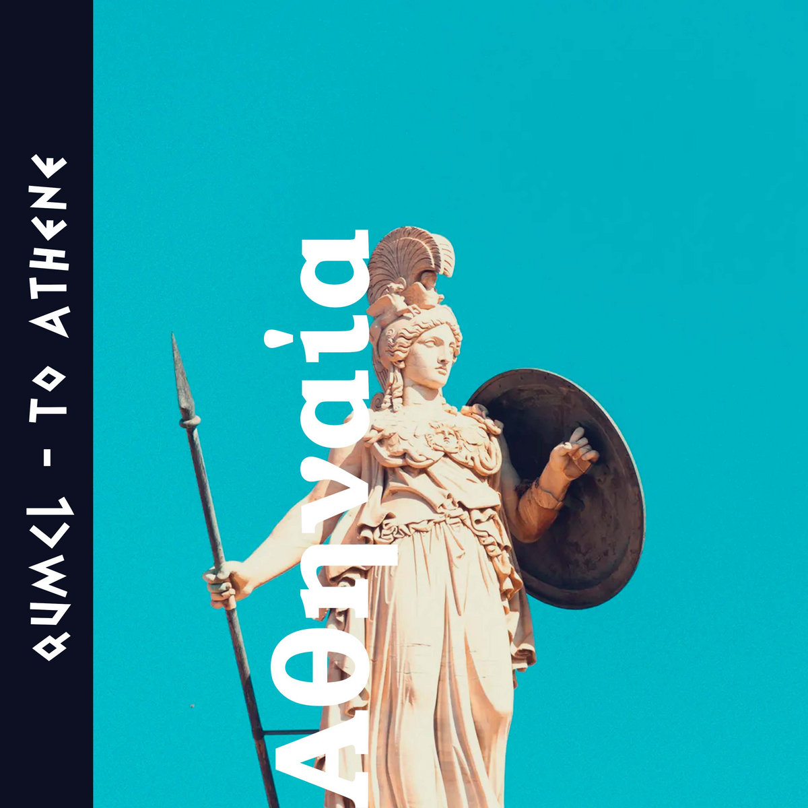
Dedicated to Athena, the goddess of wisdom and warfare, To Athene is the tetralogy's most austere and architectural release. It presents ancient Greece not as a living, breathing civilisation, but as a haunted, abandoned labyrinth.
The album is an archaeological excavation of sound. The title track, "Athene," and others like "Shadow of Focus" and "Underworld" do not celebrate Greek heroism. Instead, they evoke empty marble halls, cold stone corridors, and the ghostly echoes of a vanished people. It is "ruin porn" in audio form, focusing on the melancholy of decay.
The music is dry, mathematically precise, and rhythmically brittle. The IDM structures are sharp and pointillist, with glitches and clicks sounding like crumbling masonry. Field recordings (or their simulations) of wind, distant footsteps, and echoing chambers are foregrounded. There is no warmth here — only the cold, hard truth of entropy.
Place in the Tetralogy: This album grounds the cosmic scale of From Atmos in a physical, decaying reality. It is the sound of history as a wound, not a monument.
3. Egyptology (July 14, 2024) — The Tombs of Egypt
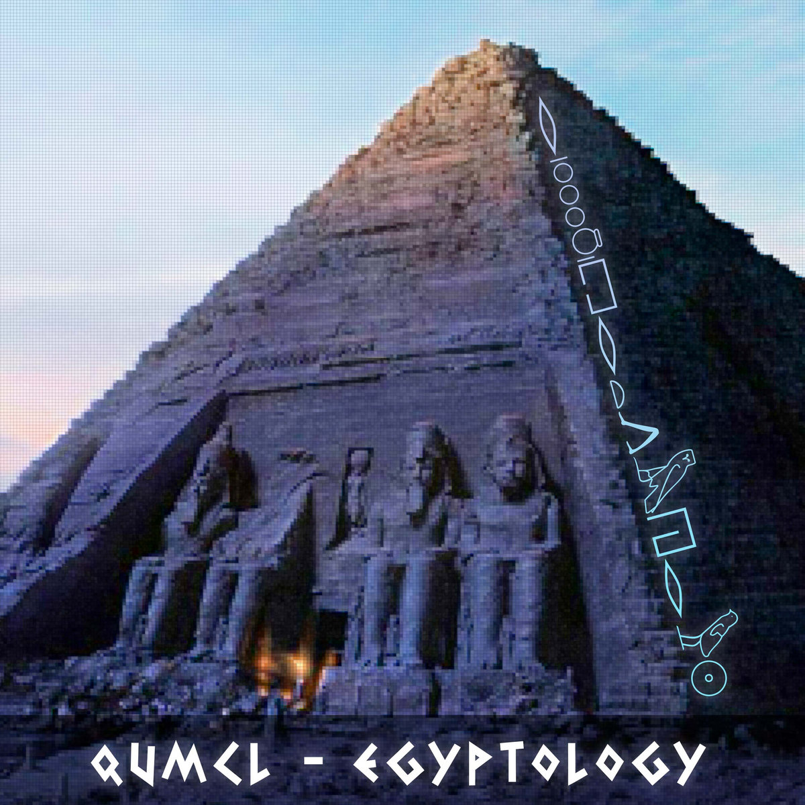
The centerpiece of the tetralogy and arguably the most famous release of qumcl's career, Egyptology received a limited cassette edition through the Kentucky-based label Fantasy Audio Magazine, exposing his music to a wider audience of tape collectors and outsider music enthusiasts.
The album is a deep dive into the funerary rites and pantheon of Ancient Egypt. However, Gerasenko avoids all stereotypical "exotic" musical tropes (no snake charmer melodies or pseudo-Egyptian scales). Instead, each deity-themed track creates a specific, oppressive sonic environment.
Anubis: The god of death. A slow, weighty, ritualistic ambient piece, like being sealed in a sarcophagus.
Ra: The sun god. Built on a dry, hypnotic, low-fidelity techno beat, evoking the relentless, heat-blasted desert.
Sutekh (Set): The god of chaos. The rhythm becomes jagged, aggressive, and unstable, reflecting divine rage.
Thoth: The god of wisdom. A more meditative, looping IDM pattern, suggesting an ancient, calculating intelligence.
Sound: The production is notable for its "sandy" texture — an abundance of micro-noise, crackle, and tape hiss that physically sounds like dust and ancient grit. The bass is deep and oppressive, creating a palpable sense of being underground, in a burial chamber. The album is claustrophobic, mystical, and deeply hypnotic.
Place in the Tetralogy: This is the cycle's emotional and textural heart. It moves from the intellectual distance of To Athene to a more sensory, immersive, and visceral experience. The international cassette release marked the point where the Surgut underground reached a global audience.
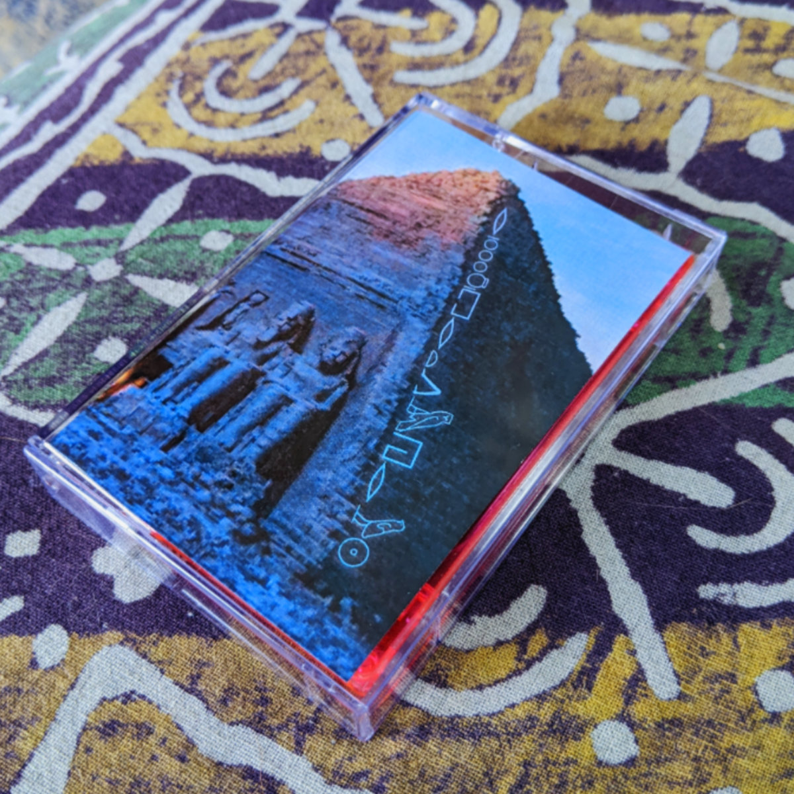
4. Olympians (July 26, 2024) — The Power of Olympus
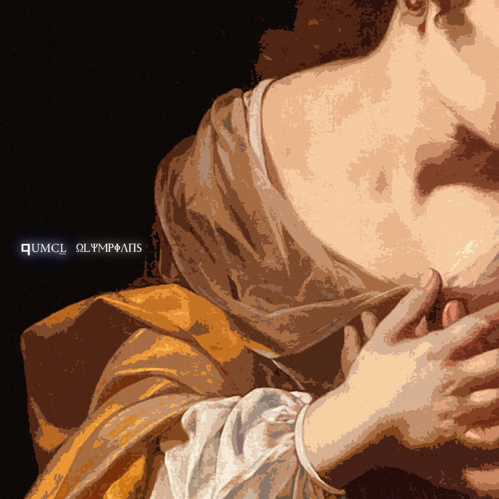
The climactic finale of the tetralogy is a dramatic shift in tone and energy. Where To Athene was cold and Egyptology was oppressive, Olympians is explosive, triumphant, and brutally dynamic.
The album portrays the gods of Olympus not as distant statues but as active, formidable, and dangerous forces of nature. It is the sound of a storm on Mount Olympus, a rave among the ruins. The tracklist directly names the gods (Poseidon, Athene, Aphrodite) and includes a crucial bridge track, "Ancient Egypt," which sonically links the two halves of the tetralogy.
This is the most aggressive and rhythmically driven release of the cycle. The breakbeats are fast, distorted, and relentless. Industrial-tinged techno pulses drive the energy. Synth lines are massive and monolithic, like thunderclaps. Yet, the lo-fi aesthetic remains, preventing the album from sounding "clean" or commercial. It is a glorious, cathartic digital explosion.
Place in the Tetralogy: Olympians provides a dynamic and emotional release after the suffocating atmosphere of Egyptology. It closes the cycle on a note of power, energy, and raw, chaotic celebration. The inclusion of "Ancient Egypt" and a repeated "Athene" theme confirms the four albums are part of a single, integrated musical statement.
"The idea for a mythological tetralogy actually came about quite by chance. I used to play Tomb Raider as a child, and that same year the remasters of the original Tomb Raider games (1–3) were released. Plus, back in the vqopb days, I used samples of Lara Croft from Rise of the Tomb Raider; I've been a fan of this series since I was a child, but it was specifically the first Tomb Raider game that inspired this tetralogy. As you may notice, the first Tomb Raider features locations in Egypt and Ancient Greece, and it also references mythology. Because of this, I began to immerse myself in Ancient Greek mythology and Egyptology; I even have a huge book on the subject. Basically, it all started quite by chance, and I put these releases together very quickly that same month – probably in about 2–4 days, I reckon. But I didn't realise it would give me such a boost."
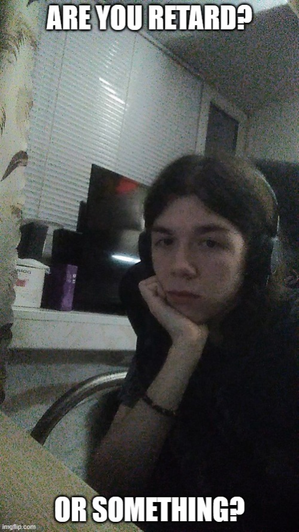
August--September 2024: Cybernetic Collapse Diptych
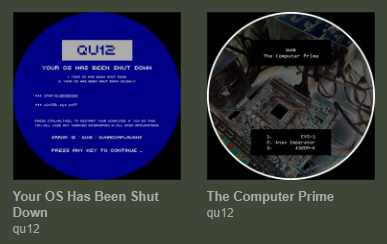
The Computer Prime (August 9, qu12): A functioning supercomputer: cold, disciplined, and repetitive. Cyclical IDM rhythms and ambient techno create the atmosphere of retro-futurist server halls.
Your OS Has Been Shut Down (August 23, qu12): The collapse. Rhythms fragment, skip, and self-destruct; tape hiss dominates. The ending moves toward nearly empty ambient space — total system death.
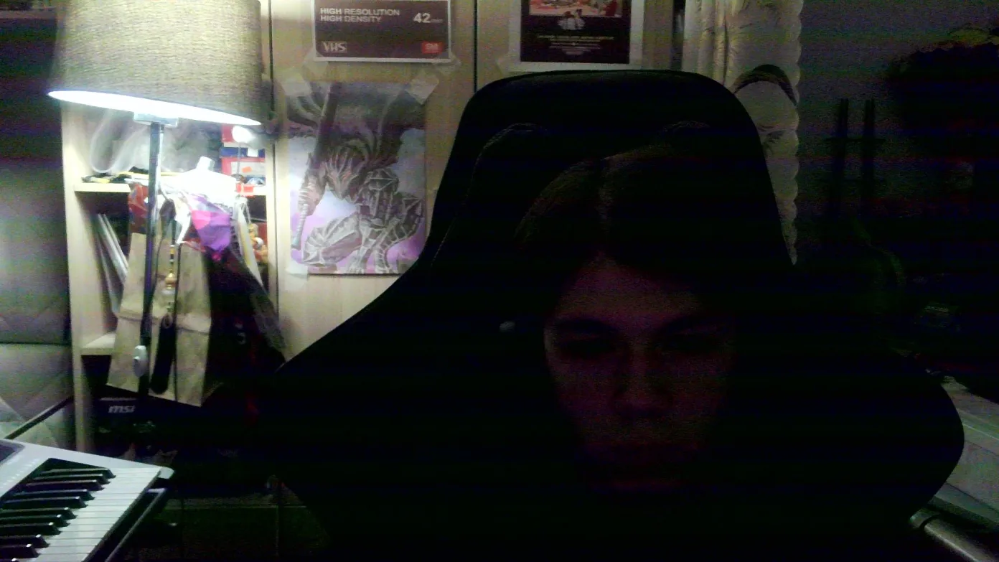
September--October 2024: Deconstruction, Intimacy and Synthesis
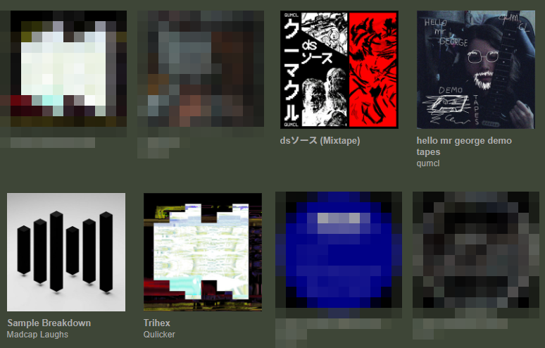
Sample Breakdown (September 12, Madcap Laughs): A manifesto of deconstruction: dry, harsh glitch-IDM focused on microscopic levels — short vocal fragments, clicks, broken drum loops, and digital errors.
Trihex (September 2, Qulicker): Hypnotic, monolithic trance and post-industrial techno-ambient built on low-frequency drones, evoking abandoned industrial structures and concrete bunkers. These are unreleased features from the vqopb.
hello mr george demo tapes (September 28, qumcl): A surprising release where IDM crosses with indie rock. Tracks like "dr risperidone" return to themes of mental health, but the sound is sedated. "winter afternoon" and "my cozy house" sound unusually warm, proving Gerasenko's minimalist language can communicate not only paranoia but also nostalgia and emotional fragility.
dsソース (Mixtape) (December 26, qumcl): A grand, retrospective synthesis of the year's aesthetics, blending IDM, vaporwave, ambient, jungle, and lo-fi collage. The remix of Zak Belica's what's the world come to (composer for SIN Episodes) transforms cult game samples into broken, IDM jungle. Raw aggression finally befriended cinematic melancholy.
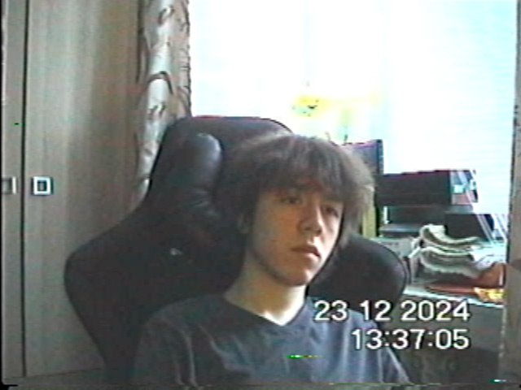
"To be honest, over the past three years I've hidden and deleted music from the internet many times; once or twice I wanted to completely wipe my SSD and hard drive of all my music and work. There were so many moments like that—there was hatred, envy of others, and aggression. I went through a great deal and it was very bipolar. I do, of course, have schizophrenia, but in fact I have schizoaffective disorder, because this constant bipolar phenomenon affected both my control over the music and its creation, as well as whether to post it online or hide it from people's eyes altogether."
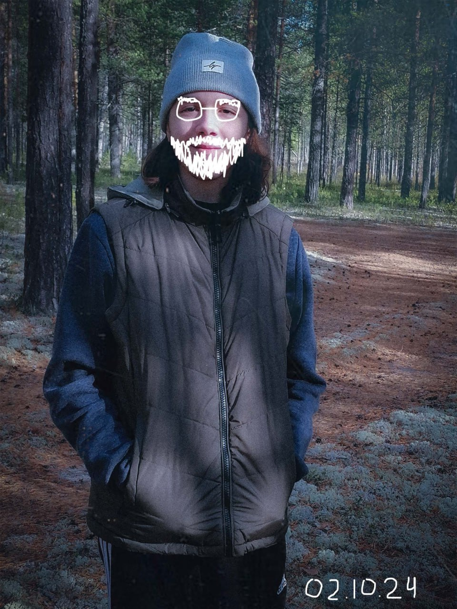
January 2025: PAUSED — A Frozen Moment
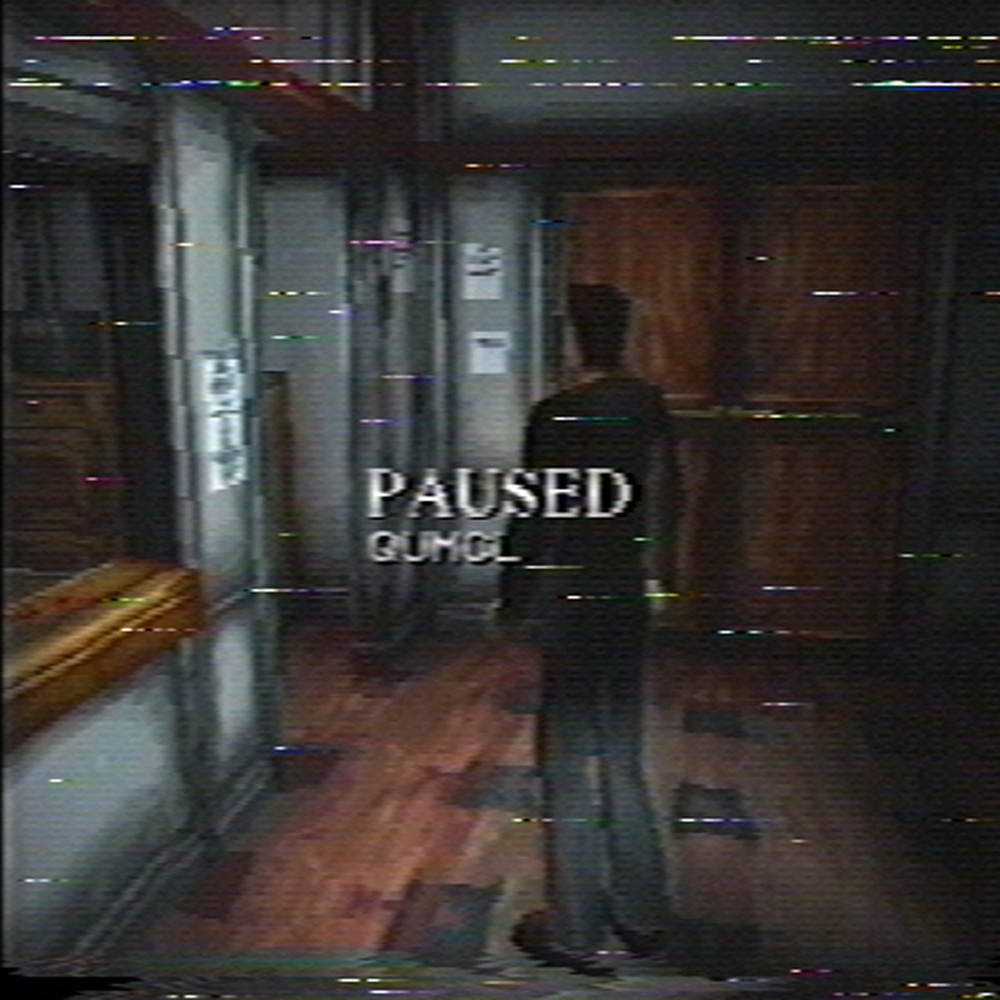
After the monumental year-end summary of 2024 with the dsソース mixtape, Gerasenko began the new year with a minimalist but significant statement — the mini-album "PAUSED", released on January 30, 2025.
This release marks not an evolution, but rather a fixation of a state. The title perfectly describes both the sound and the mood of the record.
Soundscape and Atmosphere:
In contrast to the dynamic, event-driven albums of 2024, PAUSED presents a cinematic, frozen snapshot. It is no longer a run through Backrooms corridors or a rave among the ruins of civilization. It is a moment of silence — deep, almost painful meditation.
The musical minimalism refined on albums like I AM ABSOLUTELY SURE... reaches its zenith here. Gerasenko uses the same tools: lo-fi hiss, fragmented IDM rhythms, deep ambient pads, and field recordings. But here, they serve not to create horror, but to convey a feeling of isolation and timelessness.
Tracklist Breakdown:
The album consists of three tracks forming a single, cohesive narrative:
1. "nowhere code" (04:26): The opening track immediately sets the tone. The title references digital emptiness. The music is built around a looped, aggressive jungle, over which a broken but very restrained rhythm barely pulses. It is the sound of a running algorithm going nowhere.
2. "happening this morning" (02:58): The shortest and perhaps most fragmented track. The sound resembles a morning awakening captured on damaged tape. Fragments of melodies, rustles, glitches, and distant, muffled beats create an atmosphere of a surreal, sticky morning. The song features an *excerpt from a news report on the 9/11 terrorist attacks*.
3. "flesh interface" (03:54): The title introduces a disturbing biopunk subtext. This is the most "physical" track on the release, where cold digital structures collide with warmth, an almost organic hum. The techno sounds like a meditation on where the human ends and the machine begins.
Place in the Discography:
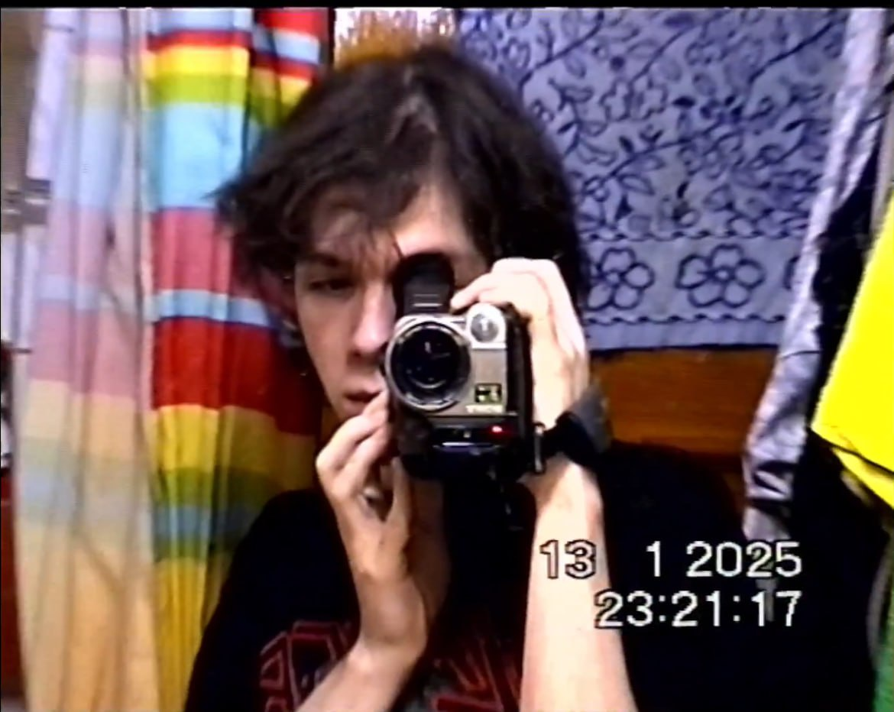
"PAUSED" is not a loud manifesto, but an intimate pause. It shows that even in a world made of glitches and noise, there is room for silence and stillness. This album is an important connective tissue, demonstrating that minimalism and melancholy are as crucial pillars of qumcl's work as aggressive breakbeat. It prepares the ground for the more intimate and poetic works of 2025, such as Smoking Delay (Selected Works) and the Fractured Voices project.
February--May 2025: Remasters, Lo-Fi Sketches and the Birth of Fractured Voices
After the minimalist pause of PAUSED in late January 2025, Gerasenko entered a period of reflection, archival curation, and the exploration of new sonic territories.
Trihex (Remastered) — May 26, 2025
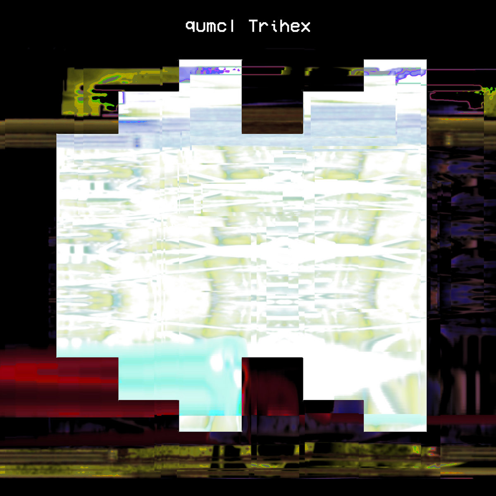
Released under his own name, Trihex (Remastered) is not a new album but a significant archival release. The material was recorded approximately between August 2023 and May 2024, originating from the vqopb album era, with some tracks serving as early demos for that collaborative project. This remaster serves as a historical document, cleaning up and presenting these raw, transitional works from the peak of his collaboration with Xiroach. It offers a glimpse into the workshop where the harsh, breakcore-driven sound of that period was forged, now with improved clarity while retaining its characteristic lo-fi grit.
The Light That Bleeds Through Fractured Voices — April 23, 2025
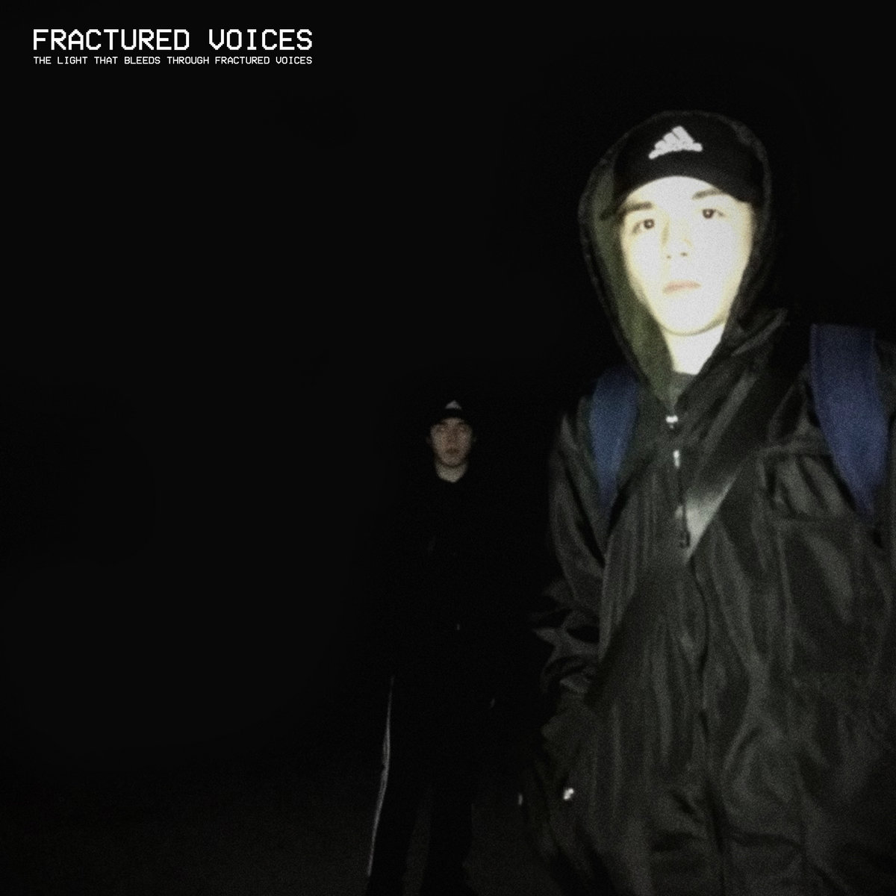
This release marks the launch of Fractured Voices, a new side project and a significant artistic departure. While retaining Gerasenko's signature lo-fi and glitch aesthetics, this project places a much stronger emphasis on spoken word, abstract poetry, and fragmented vocal narratives.
"I think Death Grips inspired me to create Fractured Voices"
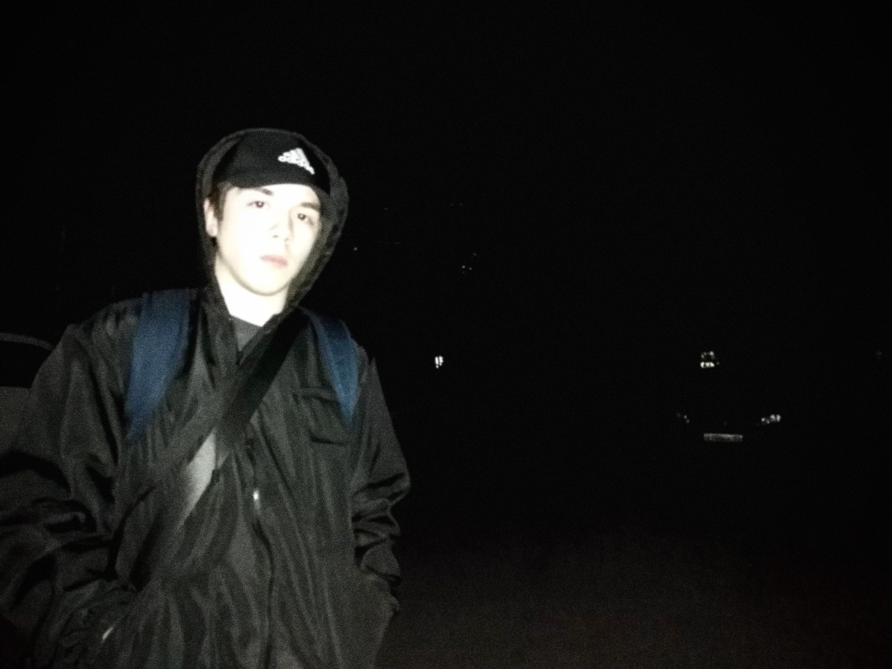
The mixtape is a descent into digital paranoia, madness, and psychological decay. Tracks feature repetitive, mantra-like lyrics exploring themes of control ("he is control my mind" ), surveillance ("safety is danger" ), and the erosion of self ("Error brain, no reset, no preset" ). It is a direct continuation of the themes of isolation and mental fragmentation first explored in the Kitchen diptych, but filtered through a new, more lyrical and textural lens.
The music creates an unsettling, liminal space. It blends murky ambient, decaying drone, glitch, and industrial field recordings. The vocals are not sung but whispered, repeated, and distorted, acting as another instrument in the mix.
The final two tracks (10 and 11) feature a collaboration with his frequent British partner Xiroach, adding another layer of glitched-out weirdness to the project's debut.
The entire mixtape functions as a *continuous, 31-minute audio collage*, inviting the listener not to dance, but to get lost inside a fragmented, anxious mind.
Smoking Delay (Selected Works) — May 30, 2025
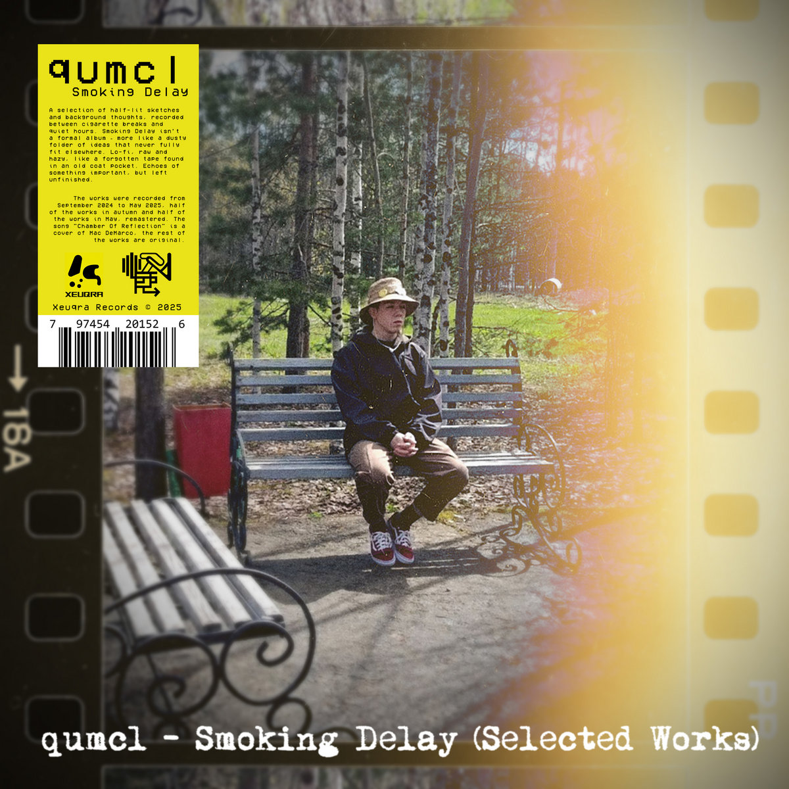
Just days after the Trihex remaster, Gerasenko released Smoking Delay (Selected Works) under his main qumcl alias. True to its name, it is a collection of
"half-lit sketches and background thoughts, recorded between cigarette breaks and quiet hours."
The artist himself describes it not as a formal album, but as "a dusty folder of ideas that never fully fit elsewhere." This candid framing allows for a more relaxed and intimate listening experience.
The album is a significant stylistic detour. While still lo-fi and hazy, it largely abandons the aggressive beats and complex IDM structures. Instead, the focus is on melancholic guitar-led ambience, raw tape hiss, and soft, poetic electronics.
Original vs. Cover: The material was recorded in two sessions — autumn 2024 and May 2025. It includes 16 tracks, among which is a lo-fi cover of Mac DeMarco's "Chamber Of Reflection" . The rest of the material is original. Tracks like "Just a Rainy Day", "Alone Again", and "With You" feature simple, heartfelt lyrics, marking a rare moment of direct and fragile emotional expression in his discography. The production is raw, unfinished, and deeply personal.
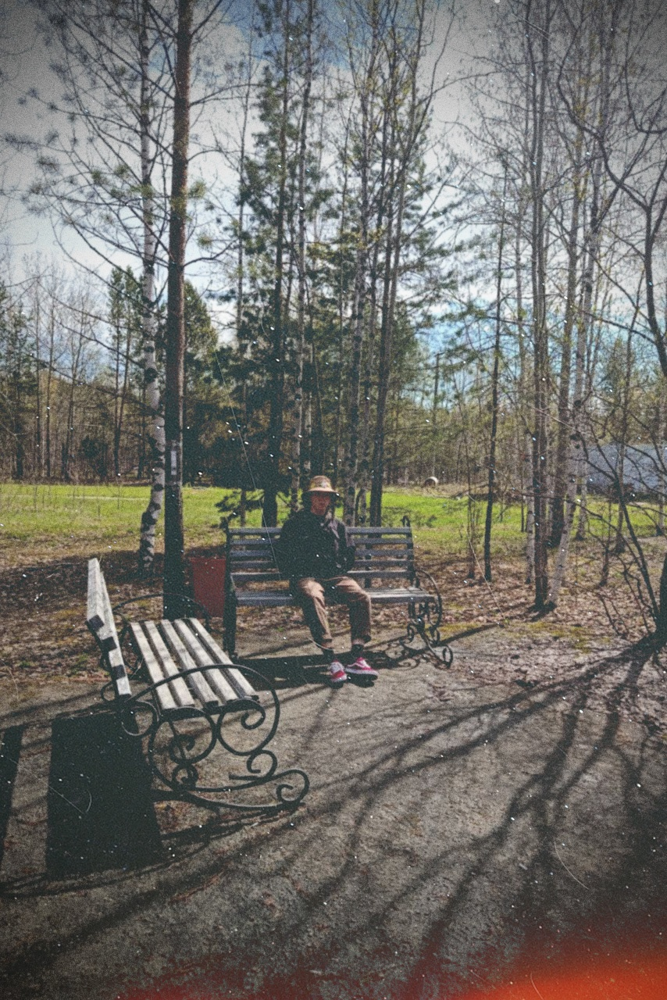
This release is the perfect companion piece to the Fractured Voices project. While Fractured Voices uses words to express digital psychosis, Smoking Delay uses them (and lo-fi melodies) to express a quiet, resigned loneliness. Together, they show Gerasenko moving beyond purely instrumental storytelling into a more song-based, intimate form of expression, setting the stage for the even more ambitious releases of 2026.
Early summer-June 2025: Remasters, Archival Releases, and the Demo Tape
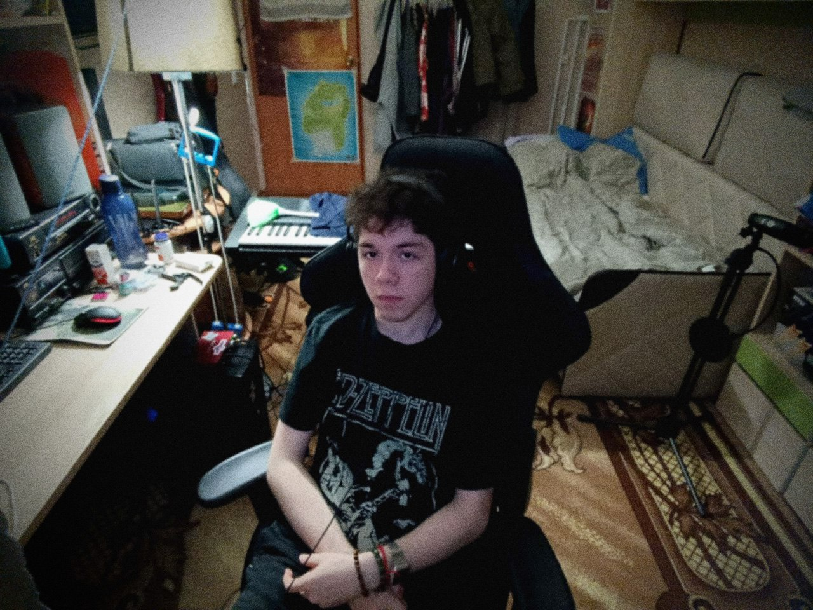
Following the introspective releases of spring 2025 (the Trihex remaster, Smoking Delay, and the launch of Fractured Voices), Gerasenko dedicated June to revisiting, refining, and systematically archiving his recent past. This month saw the release of two significant remasters and a monumental demo compilation.
Olympians (Remastered) — June 14, 2025
Originally released in July 2024 as the climactic finale of his mythological cycle, Olympians received a comprehensive remaster. While the original was characterised by a deliberately raw, diary-like lo-fi aesthetic, this new version brought
"a new sense of depth and clarity — while preserving the warmth and intimacy of the original."
The album remains an instrumental exploration of Greek mythology, painting sonic portraits of archetypes: from the god of thunder to the goddess of wisdom, from oceanic depths to the sands of Ancient Egypt. The remaster allows the cinematic themes and melancholic introspection to breathe more freely, making it an ideal soundtrack for
"nighttime walks, reflection, daydreams, or simply drifting away."
The cover art features Artemisia Gentileschi's Penitent Magdalene (c. 1625--30), reinforcing the album's themes of introspection and mythological melancholy.
PAUSED (Remastered) — June 15, 2025
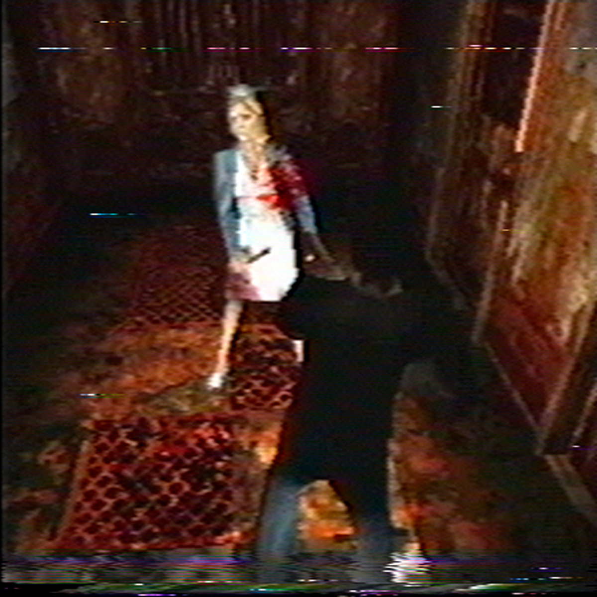
Just one day later, Gerasenko released a remastered version of his January 2025 mini-album, PAUSED. The original release was a minimalist, three-track meditation on stasis and isolation. The remaster enhances its core concept, described by the artist as blending "lo-fi drum and bass with minimal techno textures and a dusty, tape-saturated warmth."
The remaster likely brings greater clarity to its fragmented rhythms ("nowhere code" ), muffled soundscapes ("happening this morning" ), and organic-digital hybrid textures ("flesh interface" ), without sacrificing the original's hazy, nostalgic atmosphere.
*Demo Tape 2023-2024* — June 16, 2025
The most significant archival release of the month, *Demo Tape 2023-2024*, is a collection of 21 electronic sketches and personal experiments recorded between 2023 and 2024. True to its name, it functions as a "dusty folder" of raw ideas, capturing the artist's creative process in its most unpolished form.
The release is notable for several reasons:
Physical Edition: A limited run of original demo tapes was released as cassettes, which quickly sold out, demonstrating a dedicated collector base.
Tracklist as Archive: The track titles are often direct descriptors, such as "72 IDM", "74 Old Chill Ambient Techno", "82 Sounds like EDM Techno", "85 Tomb Raider 1", "92 Tomb Raider 2", "103 Vaporwave Vibes", and "108 Energy Dnb". This candid labelling offers a fascinating glimpse into Gerasenko's creative workflow and his diverse range of influences.
Lo-fi Ethos: The collection is not about polished production, but about "memory fragments, emotional noise, and private moments caught on tape." It features lo-fi textures, nostalgic synths, broken rhythms, and ghostly ambiences, all recorded on a home setup with field recordings.
The Demo Tape serves as a perfect companion piece to the spring's Smoking Delay (Selected Works), offering an even rawer, less-filtered look into the artist's sonic sketchbook and solidifying the first half of 2025 as a period dedicated to introspection and archiving.
Mid-Summer July 2025: Egyptology Remastered, the WERNER Single, and a Descent into Psychosis
Following the archival work of June, Gerasenko continued to refine his back catalogue in July, while also releasing a standalone single and a harrowing new full-length album that marked a stark return to the themes of mental illness.
Egyptology (Remastered) — July 13, 2025
A little over a year after its original release, Gerasenko's breakthrough mythological album received a comprehensive remaster. The original *6-track album (XQ0008)* was expanded into a *17-track archive*. The remaster includes all original tracks ("Anubis", "Ra", "Sutekh", "Thoth", "Horus", "Osiris") alongside a wealth of demo material. These demos offer a fascinating insight into the album's development, featuring early versions of tracks like "Isis (Demo)", "Khonsu (Demo)", and "Shu (Demo)". Notably, it also includes "Khonsu (Xiroach Version) (Demo)", showcasing the continued collaboration with his British partner. Additional demos like "Shadow of Focus (Demo)", "Anniversary (Demo)", and "Underworld (Demo)" further expand this release into a comprehensive document of the Egyptology creative sessions.
WERNER — July 14, 2025
Released as a standalone digital single just one day after the Egyptology remaster, "WERNER" is a track that had previously appeared as a bonus track on the Fantasy Audio Magazine cassette version of Egyptology. Its release as a single suggests it holds a particular significance for Gerasenko. The track is characterised by its harsh, industrial, and rhythmic nature, fitting squarely within his IDM and breakcore leanings. It serves as a potent reminder of his harder-edged production style, contrasting with the more ambient and demo-oriented material being released around the same time.
An Empty Diagnosis Beyond This Room — July 26, 2025
The most significant release of the month, and one of the most challenging in his entire discography, is An Empty Diagnosis Beyond This Room. Described by the artist as
"the first phase of an auditory dissection of uncontrolled schizophrenia psychosis"
this album is a direct and disturbing return to the themes first explored in the 2023--2024 Kitchen diptych.
"I was sketching out ideas for this album; I remember walking around my neighbourhood and taking photos of interesting places that would fit the album's concept, because specifically those places I photographed, and indeed the whole neighbourhood in general, I associated with my childhood, and following acute psychotic episodes I have brain damage which is why I constantly dream about these places, this neighbourhood; I also made notes on my phone and in a notebook. Initially I wanted to take photos of a psychiatric hospital but I wouldn't have been able to because of restricted access, and besides, the ward itself looked like a normal hospital from the outside, but in reality, inside it was a prison with wards; in some wards there was a mixed ward of people, in others there was a ward for severely ill alcoholics, severely ill schizophrenics and the mentally disabled, and people with dementia. I made this album specifically about that period, but to be honest, I was lying there quite comfortably on my own and didn't have any difficult situations with the orderlies."
The album is structured as a seven-track descent into madness, documenting
"the collapse of rational soundscapes into a vortex of radio interference, VHS decay, and harsh noise."
Concept: The work is framed as "a direct transmission from the edge of audible reality", recorded in domestic isolation using "fragmented field recordings, malfunctioning electronics, and repurposed media artifacts."
Track Breakdown: Each track represents a distinct phase of the psychotic episode.
*P1.1 - Admission to Nowhere (8:35)*: The threshold of psychosis cracks open.
*P1.2 - Schizophonic Waltz (4:21)*: A distorted dance with intrusive voices.
*P1.3 - The Sadness of a Broken Gramophone (5:12)*: Melodies disintegrate into mechanical sobs.
*P1.4 - Lobotomy of Memory (16:20)*: Surgical static erases recall. This is the album's longest and most harrowing piece.
*P1.5 - Dementia Praecox Hymns (5:53)*: Choral fragments from a crumbling mind.
*P1.6 - Emergency Broadcast (17:01)*: Pirate signals from a collapsing reality.
*P1.7 - Parasitic Echoes of a Prayer (22:48)*: Final possession of the stereo field.
Sound: Musically, the album exists at the "intersection of experimental music, sound art, and involuntary documentation." It largely abandons traditional rhythm and melody in favour of oppressive dark ambient, harsh noise, glitch, and unsettling drone.
"I was mainly very inspired by the Caretaker project, but as you know, there are loads of people online doing similar parodies, or perhaps I just find the theme of dementia and his albums—such as Everywhere at the End of Time—to be truly experimental and unusual; but essentially these albums are simply an interpretation of dementia; whilst he documents the condition based on a relative suffering from it, I approached it here through my own experience, drawing on the sensations of the illness and having been hospitalised three times in a single year at the height of my illness. The album is very good, but not everyone will understand it properly; personally, I wouldn't want my album to go viral on TikTok in the same way as Caretaker's album, because people definitely won't grasp the theme of schizophrenic disorders; it's not for most people, because most people don't understand what a mental illness entails, let alone a severe mental illness such as a schizophrenic disorder. But this is only the first part of the album; to be honest, I don't want to release the next parts because it would just be another Caretaker knock-off, although that's not the case – I created and mixed all the sounds here myself, rather than just buying records from a dump and making an album out of them. They're different things; it's just that the concept of the albums is similar."
This release is a powerful and uncomfortable listen. It makes no concessions to the listener, instead forcing them to inhabit the artist's fractured mental state. It stands as a testament to Gerasenko's willingness to use his music as a raw, unfiltered medium for processing and documenting his most personal and painful experiences. After a spring and early summer focused on remasters, demos, and introspective lo-fi sketches, An Empty Diagnosis serves as a brutal reminder of the turmoil that underpins much of his artistic output.
Late Summer -- August 2025: Archival Depths, Provocative Statements, and Digital Logic
Following the dark excursion into psychosis with the album An Empty Diagnosis Beyond This Room, August 2025 was marked by a series of releases that can be characterized as an "archival audit" and a "technical manifesto." Egor released a giant retrospective compilation under his old alias, a daring conceptual album, and an album dedicated to pure computer aesthetics.
*Untitled: Resonant Frequency Archive '22--'24* (Madcap Laughs) — August 6, 2025
This *monumental 40-track archive*, released under his first pseudonym Madcap Laughs, is one of the most important archival works in his discography. It acts as a
"spectral transmission from decaying memory,"
capturing the
"unstable transition between analog delirium and digital erasure."
The release is a "forensic reconstruction of sound debris," assembled from *"distorted EPs and salvaged home recordings from 2022-2024."* The title Untitled refers back to the Untitled album of 2023.
The album is a sound collage of tracks that literally "bear the scars of their media": VHS bleeding, circuit-bent instability, and the hum of broken machinery. It includes reworked versions of tracks from earlier albums such as Resonance, Selected Beats, #, Untitled, and BlowFish, as well as completely unreleased material dated 2022. The album's structure is framed by system files: it opens with "Welcome.exe" and closes with "Error.exe."
This archive is not just a collection, but a full-fledged artistic statement, drawing a line under the earlier, rawer period of creativity and making it accessible in one place. "I've polished and finished off the car I built in 2023, back when I was just starting to make my mark in the music scene"
AAEX (Remastered Edition) (Madcap Laughs) — August 17, 2025
This is a remastered edition of the album originally released on June 15, 2024. AAEX dives into the realms of drill 'n' bass, IDM, and lo-fi electronics.
The remaster aims to improve "complex textures and dynamic range," offering a more immersive experience. The album is characterized by fast, fragmented beats, layered soundscapes (glitch, ambient, distortion), and the addition of "analogue warmth" through saturation and tape emulation.
This release demonstrates Gerasenko's commitment to preserving and improving his past catalogue, even for works that are just over a year old.
CONGRATULATIONS! YOU'VE FOUND THE ABSOLUTE WORST ALBUM EVER MADE... (qumcl) — August 19, 2025
This album, released under his main alias qumcl, is a radical and post-ironic gesture. Its title and description are a direct mockery of the listener and, possibly, a response to critics.
The album is positioned as "evidence of failure," "archaeological excavation in the heart of creative bankruptcy," and "a landmark of auditory torture." It is an intentionally provocative statement.
The release consists of 12 tracks, stripped of titles and designated simply as "#1" – "#12." This is an ultra-minimalist approach that forces the listener to focus exclusively on the sound.
The album was recorded from July to September 2024. In terms of sound, it likely represents raw, unedited, and intentionally "bad" material, although the gesture itself is a form of conceptual art, challenging notions of quality and value in music.
"If you remember that album where I told Tunecore to fuck off, the point of this album is the same as that one. Some people said my music was rubbish, the arrangements were rubbish, and generally speaking there was a lot of stuff that wasn't right from a music theory perspective, but to be honest, I didn't give a shit about music theory, but about the people who say that, because I create the rules for music that sounds unusual on the modern scene; the music describes my mental state, and I can't follow life theories any more than they can follow music theory, which generally applies more to classical music. Nerds just want to look clever and superior to everyone else. But you're essentially comparing a palm tree to a birch—they're both trees, but completely different, and found in completely different parts of the world. They also said my logo at the time was a copy of the Aphex Twin, so I decided to put it on the cover."
Digital Arithmetic Logic Units (qumcl) — August 22, 2025
Just three days after the "worst album", Egor releases Digital Arithmetic Logic Units (DALU) — one of his most technically oriented and genre-diverse albums.
Concept: The title refers to computer processor components, emphasizing the "computer materialism" that has been part of his sound since 2024.
Sound: The album is a fusion of Experimental IDM, industrial, ambient, glitch, breakbeat, vaporwave, dubstep, drum n bass, future garage, drone, and lo-fi. It is a true encyclopedia of his electronic influences.
Significance: DALU serves as a bridge between purely analog and digital production methods, exploring "digital textures and rhythmic experiments." It is a continuation of the line begun on releases like The Computer Prime, but here it reaches much greater complexity and scope.
"Xiroach told me it was the best solo album I'd ever released, although to be honest, he thinks my entire discography is brilliant."
Autumn: September-October 2025: Remix Culture and Digital Deconstruction
After the intensive months of archiving, remasters, and technical manifestos, autumn 2025 became a period of more spontaneous creativity, focused on reinterpreting the works of others.
Collection of Weekly Remixes (qumcl) — October 5, 2025
As is clear from the title and description
"A spontaneous batch of remixes made out of boredom. Just October things."
this EP is a spontaneous, almost random collection. It captures a moment of creative freedom where Egor allows himself not to build grand concepts, but simply to experiment with other people's material.
Concept: "A few popular tracks from this week, reimagined through qumcl's hazy electronic lens." It is a look at pop and club culture through his signature distorted, lo-fi filter.
Content: The EP includes 7 tracks. The central track, "Fine Day" (04:36), stands out — it is a deconstruction of the classic anthem "Fine Day" (known from Opus III). The hypnotic, repetitive vocals ("It's a fine day...") are placed in the grip of broken breakbeats, glitches, and a dense ambient atmosphere. Other tracks include "Breakbrotten" (02:42), "Club Bizarre Remix" (03:00), "Club Bizarre Alternative Remix" (02:49), "Vanya Remix" (01:49), "LXN Remix" (04:00), and the short abstract conclusion "iaiaiaiaia" (01:52).
Sound: The collection balances between the genres of electronic, idm, ambient, breakbeat, breakcore, drum n bass, jungle and, of course, lo-fi and weirdcore.
This release is important because it shows Gerasenko's ability to work with recognizable material, turning it into something new, disturbing, and danceable at the same time. It serves as a precursor to the larger remix projects of 2026.
What's the World Come to (qumcl Remix) — October 6, 2025
Released just one day after Collection of Weekly Remixes, this single is an official, full-fledged remix. The track originally belongs to Zak Belica, a composer known for his work on soundtracks for cult games such as SiN Episodes.
Significance: This collaboration is important for several reasons. Firstly, it connects qumcl's music with the world of video games — one of the main foundations of his aesthetic. Secondly, Zak Belica is not just a composer, but a cult figure in the niche of underground game design, adding "geek" credibility to qumcl.
Sound: Unsurprisingly, Egor transforms the original track (likely with elements of industrial rock or electronics) into his signature aggressive, broken IDM/breakcore mix, submerged in lo-fi hiss and glitches.
This release, issued on Xeuqra Records, is an important milestone, demonstrating recognition of his talent by other, albeit niche, but respected authors.
November 2025: The Meta-Archive, Remastered Trauma, and Homages to Rave Classics
November 2025 was the culmination of many trends of the year: archiving, remastering, respect for electronic classics, and a rare, almost euphoric lightness of breath.
U͞n͝t͟i͝t͟l͞e͡d͢_3͟3͠F̵_†ΔΣΣΣ (qumcl) — November 1, 2025
This release is a true monster and, possibly, the most important "meta-archival" project of the year. The title, filled with glitch symbols ("corrupted name"), refers to "extracted VHS Δ archives, frame 33F."
Concept and Scale: The album consists of 40 tracks and represents a total deconstruction of the entire qumcl universe. It is a sound collage where "corrupted" versions of tracks are interspersed with *30-minute drones* and short glitch signals.
Structure as a Map: The tracklist is a direct map of his alter-egos and key works:
*#02 – QUMCLΔ.exe, #03 – qulicker_defrag.sys, #04 – qu12_Σrror, #05 – [madcap-laughs_corrupt.tape]*: Direct references to his pseudonyms.
#08 – xιrσach.c0rrupt, #23 – Xir0@ch, #37 – xiroach♡loves♡you: Homage and collaboration with Xiroach.
*#10, #20, #30, #40 — ENRICH-33E_Nothing*: *Four 30-minute tracks*, referencing the drone project Enrich 33E, representing "pure nothing" and "broadcasting into emptiness."
#18 — EGYPTOLOGY_.mpx, #19 — Ølympians_relic: Corrupted versions of his mythological albums.
#27 — Surgut_mem_frgmnt, #31 — Belarus_Δsync: Fixing his geographical coordinates.
#36 — test sound: The quintessence of the archive, unfinished, draft material.
This album is not for casual listening, but for "audio-archaeology." It draws a line under an entire era, turning his entire discography into a single, deformed, but cyclically closed soundscape.
"I think this album has set a new benchmark in my music; with every album like this, the sound changes, and this happens practically every year or every six months. But it's all down to isolation—I have more time to myself, I want people to know my image as an isolated schizophrenic psychopath, whose flat has its windows boarded up, with no light, and who sits all day making music in the depths of the very cold Siberian wilderness; if ever a Canadian, American or Brit were to find him, they'd simply be in shock."
I Am Absolutely Sure There Are No Corpses In Our Kitchen (Remastered) & I Am Still Absolutely Sure There Are No Corpses In Our Kitchen (Remastered) (Madcap Laughs) — November 1--2, 2025
These two remasters, released under the old pseudonym Madcap Laughs, return the listener to the origins of his psychological sound documentary.
Concept (Part 1): The album, based on personal experience of schizophrenia, blurs the line between perception and delusion. It is an:
"intimate sound diary — a reflection of a mind unfolding and reassembling itself in sound."
The description states:
"This is not a recording about madness — it is the madness itself, echoing through the quiet rooms of reality."
Concept (Part 2): The sequel depicts:
"the mind after collapse — calm, empty, and completely consumed by its own certainty."
This description turns acceptance into horror:
"a mantra of stability whispered from inside the delusion." It is the sound of "loud madness, perfectly still and infinitely repeating."
Both remasters, released on Xeuqra Records, preserve the psychological weight of the originals, adding to them "renewed clarity and precision."
Fine Day (qumcl) — November 12, 2025
After diving into dark archives and psychosis, Egor releases Fine Day — a single that sharply contrasts with the surrounding material.
Concept: This is a full-fledged exploration of the track "Fine Day", which had already appeared as a demo on Collection of Weekly Remixes. Now it receives its own release.
Content: The single includes 4 tracks:
Fine Day (04:36): The original version of the remix.
Fine Day (Alternative Version) (04:36): An alternative mix.
Fine Day (Hard Version) (04:01): A more aggressive, club-oriented version.
Fine Day (Unreleased Version) (04:36): An archival demo version.
Sound: This release is a breath of fresh air. The hypnotic, euphoric vocals of the original classic (Opus III) are placed in his signature broken jungle and drum and bass context. This is, perhaps, the most danceable and "light" track in his discography, proving that the gloomy Siberian producer can also create pure, cathartic joy.
It's Not My Problem (qumcl Remix) & Central Industrial (qumcl Remix) (with The Future Sound of London) — November 20, 2025
Ending the month are two remixes of the legendary British duo The Future Sound of London (FSOL), pioneers of ambient techno and electronic music.
Significance of the collaboration: Working with FSOL is a huge step forward in recognition. FSOL is a cult group that has influenced entire generations of musicians. The fact that Egor remixed them speaks to his growing authority in underground circles.
It's Not My Problem (qumcl Remix): Described as a "reinterpretation in an industrial-techno direction." An aggressive, mechanistic rhythm section and distorted percussion collide with complex, glitchy IDM programming.
Central Industrial (qumcl Remix): Unlike the first, this remix focuses on "ambient techno and atmospheric breakbeats." It preserves FSOL's original industrial soundscapes but restructures them into a deep, meditative, propulsive direction.
These two remixes are the perfect bridge between his respect for the British electronic school (Warp Records, Aphex Twin) and his own unique sound.
December 2025: The Birth of q-rec and the My Schizophrenia Is Worse Remaster
December 2025 was a logical conclusion to the year, summing up the trends of archiving and systematization, and marked an important step in the institutionalization of Egor's work.
The Creation of the q-rec Label
In December 2025 (officially founded in 2026, but the first releases are dated late 2025), Egor launches q-rec — his own label imprint, based in Surgut.
An independent label, acting as a sublabel of Xeuqra Records. This means Xeuqra remains the parent structure, and q-rec is his personal subsidiary.
Created for Russian-speaking musicians, but as Egor noted, he might not run this sublabel for long.
Releases (already planned for December 2025 and 2026):
*X-1 (xiroach) – Crbe (2025)*: The first release on the label, a single by his British associate.
*qumcl – q7_++Z... (2025)*: An album with a long "broken" system hash code in the title, which fully corresponds to his digital decay aesthetic.
Fractured Voices – The Light That Bleeds Through Fractured Voices (Extended) (2026): An extended edition of a key release from his poetic side project.
Faml FX – Roeg Solo Wive Ep (2026) and *Various – q-rec compilation 01 (2026)*: Releases that expand the label's framework and include other artists.
The creation of q-rec is a powerful step, transforming him from just a musician into a curator and owner of his own sonic universe. But besides q-rec, his main creation is Xeuqra.
My Schizophrenia Is Worse (Remastered) (Madcap Laughs) — December 18, 2025
Ending the year is a remaster of the album that was one of the first and most important in his early period. Originally released in May 2023, it documented the transition from pure ambient to more complex IDM structures.
Remaster Description: A "clarified and redefined version of a foundational experimental release." The remaster does not erase the "scars" of the original but makes them "more defined." "Distorted fragments of consciousness, once packed into granular IDM textures, now resonate with new depth."
The album balances between "digital noise and fragmented melodic glimpses." Rhythms "disintegrate and reform." The atmosphere fluctuates "between claustrophobic discomfort and a strangely comforting, nostalgic haze."
This release, along with the remasters of the Kitchen diptych, completes the process of "restoring" the early legacy of Madcap Laughs, making it accessible and restored for new listeners.
**Winter 2026 (January--February): The q-rec Launch, Japanese Psychosis, and a Homage to Aphex Twin
The beginning of 2026 was a direct continuation of the strategic and creative steps outlined at the end of 2025. Egor not only launches his label but also releases the first releases on it, and then shocks the public with two very different, but equally strong albums under his main alias qumcl.
The Light That Bleeds Through Fractured Voices (Extended) (Fractured Voices) — January 2, 2026
The first release of 2026 and one of the first on the new label q-rec* is an extended edition of the debut mixtape of the side project Fractured Voices.
This release develops the ideas of the original 2025 mixtape, adding new material or extending existing tracks. It strengthens the aesthetic of Fractured Voices as a space for "poetry of digital decay," textual paranoia, and industrial ambient.
Releasing this album on q-rec, rather than Xeuqra, emphasizes that side projects and archival material will now be released under Egor's personal control.
*q-rec compilation 01* (Various Artists) — January 11, 2026
Just nine days later, the first official compilation of the label, *q-rec compilation 01*, is released. This is an important step in the institutionalization of the label.
A compilation bringing together 33 tracks from various artists connected to the qumcl ecosystem. Among the participants are qu12 (his alter-ego), It, and others. This demonstrates that q-rec is not just Egor's archive, but a full-fledged platform for "local authors and associates."
*"I originally set up this label to put together a compilation and promote Russian-speaking musicians. The first compilation we released featured my friends from Russia and Xiroach, but to be honest, only 25% of it was written by them; I produced the rest myself and used joint demo tracks with Xiroach."*
The compilation serves as a manifesto of the label, showing its diversity — from IDM and glitch to more experimental and noise-based forms.
気持ち悪い奴 (Kimochi Warui Yatsu / "Disgusting Person") (qumcl) — February 10, 2026
The first solo album of 2026 under the main alias is a return to the darkest, psychological themes, but now expressed through Japanese aesthetics and language.
The album, whose title translates to "Disgusting Person", is an "extremely heavy, explicit, and depressive exploration of psychosis, self-destruction, and self-hatred." It continues the line of his "schizophrenic" releases (Kitchen diptych, An Empty Diagnosis...).
The album consists of 10 tracks, with titles written in Japanese representing painful formulations:
*脳が俺を罵る (Nou ga Ore wo Nonosiru / "Brain curses me") (04:51)*
*分裂した独り言 (Bunretsu sita Hitorigoto / "Split monologue / Schizophrenic self-talk") (03:33)*
*大便 (Daiben / "Shit") (03:59)*
*自殺 (Jisatsu / "Suicide") (04:25)*
*へんたい (Hentai / "Pervert" or "Anomaly") (05:32)*
*役立たず (Yakutatazu / "Useless") (02:56)*
*クソ野郎 (Kuso Yarou / "Bastard" / "Motherfucker") (05:30)*
*誰もいない声 (Daremo Inai Koe / "Voice from nowhere / Nobody's voice") (01:01)*
*ずないざつおн (Zunai Zatsuon / "Intracranial noise") (02:46)*
*気持ち悪い奴 (Kimochi Warui Yatsu / "Disgusting Person") (04:21)*
The music is on the edge of breakcore, hardcore, raw dance, and noise. Beautiful ambient passages are ruthlessly torn apart by machine-gun bursts of breakcore and distorted noise. It is the sound of a mind shattering into pieces.
Japanese Context: The use of the Japanese language adds a layer of "foreignness" and detachment, allowing him to speak on extremely personal topics through the lens of Eastern aesthetics, referencing cult psychological anime and Japanese weirdcore.
"I've really wanted to do something really raw ever since 2023"
COME TO DADDY — SIGNAL ABUSE (qumcl & Aphex Twin) — February 22, 2026
The culmination of February and, possibly, one of the most ambitious and conceptually important releases in Egor's career.
This is an unofficial tribute remix of the legendary Aphex Twin EP Come to Daddy (1997, Warp Records). The title "SIGNAL ABUSE" perfectly describes Egor's approach: he takes the original breakcore manifesto and subjects it to "signal abuse."
The music simulates an "analog hardware explosion." Aphex's original vocal samples ("I will eat your soul") and drum machines are run through a broken mixing console, burnt magnetic tape, and a corrupted hard drive.
The album is structured as 7 "studies" :
Study I (The year is 1997) (01:49)
Study II (Main Reconstruction) (04:26)
Study III (Alternate Cut) (05:28)
Study IV (Distortion Layer) (04:26)
Study V (Break Study) (04:26)
Study VI (Structural Error) (05:21)
Study VII (Harsh Noise) (01:11)
This is not just a remix, but a dialogue with an idol. Egor proves that he is not a blind imitator, but an artist capable of reinterpreting and destroying the original, creating something new and uncompromising.
March 2026: Source Engine Dreams, System Collapse, and Tribute to the Greats
March 2026 continued the trend of recent months: active collaboration with Xiroach, immersion in cyber and gaming aesthetics, and bold, conceptually refined remixes of artists key to Egor.
Nzxjiy (qumcl & Xiroach) — March 15, 2026
This collaborative album with his British associate Xiroach is a direct continuation of their sound dialogue begun in 2024 with vqopb, of which it is a continuation.
The album consists of 26 tracks and is a true celebration for geeks and gamers. The track titles are encrypted in "leetspeak" (using numbers instead of letters) and are direct references to the game universes of Half-Life, Portal, and also to Aphex Twin.
Tracklist as a Map of References:
*H4lf-L1f3_L04d1ng_Scr33n..., H4lf-L1f3_2_L04d1ng_5cr33ns..., N1ght_Bu5_Fr0m_C1ty_17...*: Direct homages to the world of Half-Life and City 17.
P0rt4l_Turrets_S1ng1ng_Lull4b13s..., Th3_L45t_Tr41n_Fr0m_4p3rtur3_5c13nc3...: References to the Portal universe and Aperture Science.
Dr1ft1ng_Thr0ugh_X3n_W1th_4ph3x_Tw1n_Wh1sp3r1ng...: A direct address to his idol, combining drift through the interdimensional world of Xen (Half-Life) with the "whisper" of Aphex Twin.
Unlike aggressive hardcore, Nzxjiy sounds like a cinematic lo-fi sound collage.
"Torn rhythmic jungle patterns and glitch effects are submerged in an icy, industrial dark ambient,"
creating an atmosphere of abandoned laboratories, empty corridors, and rusted servers.
Seven Minutes Before the System Forgot Everything (Fractured Voices) — March 19, 2026
This release under the side project Fractured Voices is a direct continuation of the "digital decay" aesthetic and is, in essence, a *10-track conceptual EP*.
The title and tracklist are built around the idea of a critical system failure, loss of identity, and digital amnesia. It is a sound portrait of the moment "seven minutes before the system forgot everything."
The EP consists of short, fragmented tracks, ranging from *12-second error signals* to *almost 5-minute IDM constructions*.
Boot Sequence Failed (00:41), Echoes Looping In A Dead Channel (00:12), Error Code: Identity Not Found (04:49): Key tracks creating a narrative about technical and mental degradation.
It also includes two remixes ("Dead Link And Thoughts Derailed") of tracks from his own catalog, adding self-reference and closure to the release.
Pulsewidth (qumcl Remix) & Resonance (qumcl Remix) — March 23, 2026
The culmination of March was the release of two remixes of the most important artists for Egor.
Pulsewidth (qumcl Remix):
This is a remix of a gem from *Selected Ambient Works 85-92* — the album which, by Egor's own admission, is "the foundation of everything I do now."
Unlike the aggressive deconstruction of Come to Daddy, this remix
"immerses the bright, nostalgic melody in a dirty environment: the rhythm of the original analog techno is overloaded, broken by micro-glitches, and enveloped in a dense layer of Surgut's cassette lo-fi noise."
It is a tribute, not a destruction.
Resonance (qumcl Remix) (with HOME):
The second remix is of the cult synthwave hit "Resonance" by American producer HOME. This track, with hundreds of millions of streams, is known for its warm, nostalgic, and sunny atmosphere. Egor performs a radical stylistic trick: he "transplants this sunny Californian melody onto cold Siberian soil." The composition is immersed in his signature dirty lo-fi environment, becoming overgrown with IDM structures and cassette noise.
Both remixes, released on the same day, demonstrate the dichotomy of his approach. With one idol (Aphex Twin), he engages in a dialogue, deforming his sound. With the other (HOME), he performs an act of cultural transplantation, forever changing its "weather." This double release is the perfect manifesto of the "Surgut sound," reinterpreting global electronic classics and contemporary music.
Present Tense (April--May 2026): The Manifesto, The Archive, The Remix, and The Live Test
April and May 2026 became the brightest and most significant point in Egor's discography. Within a few weeks, he released his most important works to date, drawing a line under the past and establishing himself as a mature, uncompromising author ready for new forms.
WITHOUT MUSIC, LIFE WOULD BE A MISTAKE (Fractured Voices) — April 27, 2026
This album, released under the most poetic pseudonym Fractured Voices, is one of the most mature and lyrical statements of his career. The title — a quote from Friedrich Nietzsche — sounds like a credo.
The album is dedicated to themes of digital degradation, memory failure, and emptiness. The track titles are structured as fragments of system logs and errors: "bitrate of a mistake", "silence.exe has stopped working", "data decay for memory", "distortion of a vanished melody".
The album consists of 10 tracks, creating a unified narrative about technological and spiritual amnesia.
The music gently balances between melancholic ambient and glitch. It is not aggressive noise, but rather a "personal audio diary that has partially been erased and damaged by time." Of particular note is track 8, "Pulse Without Frequency", which is a tribute/remix to the work of Flying Lotus, adding another cult experimentalist to his palette of influences.
i uploaded 95% of my unreleased stuff (qumcl) — April 28, 2026
Just one day after the poetic album, Egor performs, perhaps, the most radical gesture of his career. This release is a colossal archive of 581 tracks, united under the collective title "Unknown."
This is a total hard drive wipe. "I uploaded 95% of my unreleased stuff." An act of absolute anti-commercial punk, digital Dadaism, and creative freedom.
581 tracks, stripped of titles. The duration ranges from *2-second glitches* to *17-minute ambient drones* (track #59). It is digital chaos, a dump of consciousness and archive simultaneously.
This gesture draws a line under his past. He is no longer burdened by unreleased material. It is a challenge to the listener ("Can you handle this chaos?" ) and, at the same time, a liberation for the author himself. Alongside the Kitchen diptych, this is the most important conceptual release of his career.
Not Gonna Get Us (qumcl Remix) (with t.A.T.u.) — May 13, 2026
Following the archive, Egor releases, perhaps, the loudest and most public remix of his career — of the cult hit by the duo t.A.T.u. "Not Gonna Get Us".
Egor takes the recognizable, fast-paced vocal parts and completely destroys the original Eurodance foundation. The track turns into a "mechanical, paranoid, and harsh electronic action film."
This is hardcore jungle and dirty industrial techno. High-speed, machine-gun drum breaks collide with a heavy techno pulse, sharp noise attacks, and micro-glitches. It is a remix-deconstruction, turning nostalgia for the 2000s into a disturbing, urban rave.
*qumcl live test 12/05/2026* (qumcl) — May 14, 2026
The culmination of this period becomes a recording of a live performance. "Live Test" is a *48-minute set*, divided into two improvisational parts.
This is a direct fixation of how his music sounds in real time, without studio post-production. It is a statement that he is ready for concert activity.
Structure:
Part 1 (31:30): A dynamic, large-scale part where deep IDM and cosmic jungle escalate into machine-gun breakcore, a dense hardcore rhythm, and dirty distortion. It is within this part that tracks by Aphex Twin mixed with Egor's own tracks are heard. As he himself noted: "I bought DJ equipment then and was checking how it sounds, I didn't have a ready-made set, I just played what was on my ThinkPad"
Part 2 (17:00): The concluding, more meditative part. It moves away from breakbeat into deep, isolated dark ambient and weirdcore sound fragments, simulating the "cooling down of the equipment."
The release captures the artist at his peak form: free from the archive, technically flawless, and ready for large-scale live performances.
Backrooms (qumcl) — May 17, 2026
Released just three days after the concert test, this release is a direct sonic immersion into the aesthetic of the internet phenomenon of the same name.
«Backrooms» is a well-known creepypasta and visual meme, describing endless, empty, yellowish office labyrinths filled only with the hum of fluorescent lights and a feeling of total, oppressive isolation. It is the quintessence of "liminal space" — a transitional place you are trapped in forever.
It fully corresponds to the Backrooms culture. It is claustrophobic drone ambient and glitch noise. The music does not develop; it is static, monotonous, and endless. Humming, low-frequency vibration, rare but sharp sound artifacts create the perfect, unbearable soundtrack to the loss of sanity in endless subconscious corridors.
This release shows that even after the powerful purging gesture (the archive of 581 tracks) and the statement of intent for concert activity, Egor remains true to his root aesthetic — creating sound worlds that convey loneliness, anxiety, and digital terror. As of now (May 2026), «Backrooms» is the logical conclusion of themes begun in the Kitchen diptych and An Empty Diagnosis Beyond This Room, but transferred to the collective digital unconscious. Will there be a continuation? We do not know. But the theme of mental illness is very important in Egor's discography.
Studio Architecture and Gear: The Tools Behind the Sound (2024 Era)
The hardware and software setup of Egor Gerasenko in 2024 plays a critically important role in understanding his musical evolution. It is through the combination of vintage electronics, modern IDM tools, cassette degradation, and powerful digital processing that the signature qumcl sound — a blend of cinematic ambient, weirdcore, lo-fi IDM, industrial techno, and post-internet melancholy — was forged.
The year 2024 was the moment when a home underground setup transformed into a full-fledged experimental electronic studio, capable of producing a wide spectrum of sounds:
Psychotic dark ambient (I AM STILL ABSOLUTELY SURE THERE ARE NO CORPSES IN OUR KITCHEN);
Complex breakbeat-IDM (vqopb);
Mythological cinematic ambient (Egyptology, Olympians);
Retro-futuristic vaporwave/weirdcore (dsソース);
Intimate lo-fi diary ambient (hello mr george demo tapes).
Central Computer System
The studio's foundation is built around two primary machines: an Apple MacBook Pro Late 2011 and a Lenovo ThinkPad T480s.
The old MacBook Pro perfectly fits the qumcl aesthetic, possessing the characteristic "digital warmth" of older audio drivers, making it ideal for live looping, ambient production, cassette workflows, and glitch sequencing. This machine likely participated in the early weirdcore period, the Kitchen diptych, ambient sketches, demo tape workflows, and cassette bounce processing. Aesthetically, it aligns with the spirit of liminal internet, old web, 2010s vaporwave, and decayed digital culture.
The primary production machine, however, is a modern high-end electronic production workstation: a Ryzen 5 5600X with an NVIDIA RTX 5060 and 32 GB of DDR4 RAM. This upgrade explains the sharp increase in scale, clarity, and technical complexity in the 2024 sound — particularly audible on albums like vqopb, Olympians, Trihex, The Computer Prime, and dsソース.
Central DAW Ecosystem
The core of his production is Ableton Live 12 Suite (and previously Live 11) paired with an Ableton Push 2. Ableton is ideal for qumcl's philosophy: loop-based composition, glitch mutation, IDM sequencing, breakbeat fragmentation, and live ambient layering. The Push 2 is especially important, as it turns music into a near-physical performance, allowing him to launch scenes, break rhythms in real-time, restructure loops on the fly, and create hypnotic repetitive structures. This explains the cyclical trance of Trihex, the disintegrating rhythms of Sample Breakdown, the long acid progressions of vqopb, and the hypnotic drones of From Atmos.
Cassette Architecture and Tape Degradation
The symbolic heart of the entire studio is the JVC TD W118 (and a TASCAM 202MKV) cassette deck. It is the source of much of qumcl's lo-fi aesthetic: tape hiss, wow and flutter, degraded ambience, VHS warmth, dusty saturation, and cassette artifacts. These hardware units are supplemented by a suite of software emulations: Wavesfactory Cassette, Aberrant DSP SketchCassette II, Softube Tape, Jonas Eriksson Tape Fiasco, and *XLN Audio RC-20 Retro Color*. This part of the setup is responsible for the feeling of old VHS tapes, liminal nostalgia, home-recorded melancholy textures, and degraded memory aesthetics — essential to albums like hello mr george demo tapes, the Kitchen diptych, dsソース, To Athene, and Egyptology.
Roland and the Classic IDM/Techno Foundation
Gerasenko's setup is surprisingly close to classic IDM/techno studios of the late 1990s. Key devices in his arsenal include the iconic *Roland TB-303*, *TR-808*, *TR-909*, *TR-606*, *TR-707*, *TR-727*, *SH-101*, *Juno-60*, *Juno-106*, *Jupiter-8*, *JD-800*, and *D-50*. This architecture forms the basis of his acid basslines, industrial drums, cold digital pads, old-school techno atmosphere, and rave-era percussion.
D16 Group: The Acid and Industrial Engine
An important part of the setup is the D16 Group suite, including Phoscyon 2, Drumazon 2, Nepheton 2, Nithonat 2, Devastor 2, and Decimort 2. These are the foundation of his acid techno, harsh IDM, distorted breakbeat, and industrial rave aesthetics, forming the sonic philosophy behind vqopb, Olympians, and The Computer Prime.
Glitch and Digital Destruction
Key tools for digital destruction are dBlue (Illformed) Glitch 2, Cableguys ShaperBox 3 Bundle, Devious Machines Infiltrator 2, and Potenza DSP Amigo Sampler. They explain the rhythmic collapse, broken sequencing, sample mutation, digital decay, and buffer-style glitches found in the disintegrating beats of Sample Breakdown, the digital agony of Your OS Has Been Shut Down, and the psychotic noise fragmentation of the Kitchen diptych.
Cinematic Ambient and Sci-Fi Layer
The primary cinematic instruments are Spectrasonics Omnisphere, Native Instruments Kontakt 5, Valhalla VintageVerb, and Valhalla Plate, alongside a vast park of Arturia emulations: the *CS-80*, Prophet, DX7, Synclavier, Mellotron, Buchla, Emulator II, *Jup-8*, Synthi, and *Matrix-12*. This is where his sci-fi melancholy, liminal ambience, retro-futuristic atmosphere, and cinematic drone architecture are born, particularly heard on From Atmos, Egyptology, To Athene, dsソース, and the track "another resonance prospector".
Live Instruments and the "Home-Recorded" Layer
Despite the dominance of electronics, his setup also includes live instruments: a *Jet Guitars JS-300*, a Yamaha TRBX174 Bass, and a Yamaha PSR E373. This explains the indie rock fragments, soft-rock melancholy, and home-demo aesthetics present on hello mr george demo tapes, particularly the tracks "lovely lasagna song" and "my cozy house".
Monitoring and Studio Environment
The studio chain is completed by a Focusrite Scarlett 2i2 interface, PreSonus Eris E5 XT studio monitors, and *Audio-Technica ATH-M40x* headphones, a configuration ideal for close-up IDM mixing, detailed noise processing, ambient depth balancing, and cassette texture monitoring.
Conclusion
The qumcl 2024 setup is a unique hybrid of old internet culture, 1990s IDM, industrial techno, weirdcore aesthetics, cassette nostalgia, and cinematic ambient production. Gerasenko's greatest achievement as a producer is that he does not use equipment for the sake of "vintage" coolness. All the technology is integrated into the artistic concept: cassettes become memory, glitch becomes mental decay, ambient becomes liminal space, acid and techno become digital anxiety, and old synthesizers become the voices of broken electronics.
This is why the releases of 2024 do not sound like a collection of genre experiments, but as a single, vast universe of post-Soviet digital surrealism.
“Aphex Twin got me started by showing me what music is, but absolutely everything else I did myself – I just locked myself in my room for a few years and, drawing inspiration from the things around me or whatever pops into my twisted head, I stand out from other struggling musicians because I’m just a twisted, bad boy with demons in my head and Satan in my soul. I have a diary where I used to draw lots of creepy pictures, write insults, and wish death upon everyone including myself. To be honest, it’s hard for my mum to look at this diary, and it makes my friends feel sad. I also used to draw pictures on the walls images I heard in my head or saw before my eyes. My way of life is, in essence, my art.”